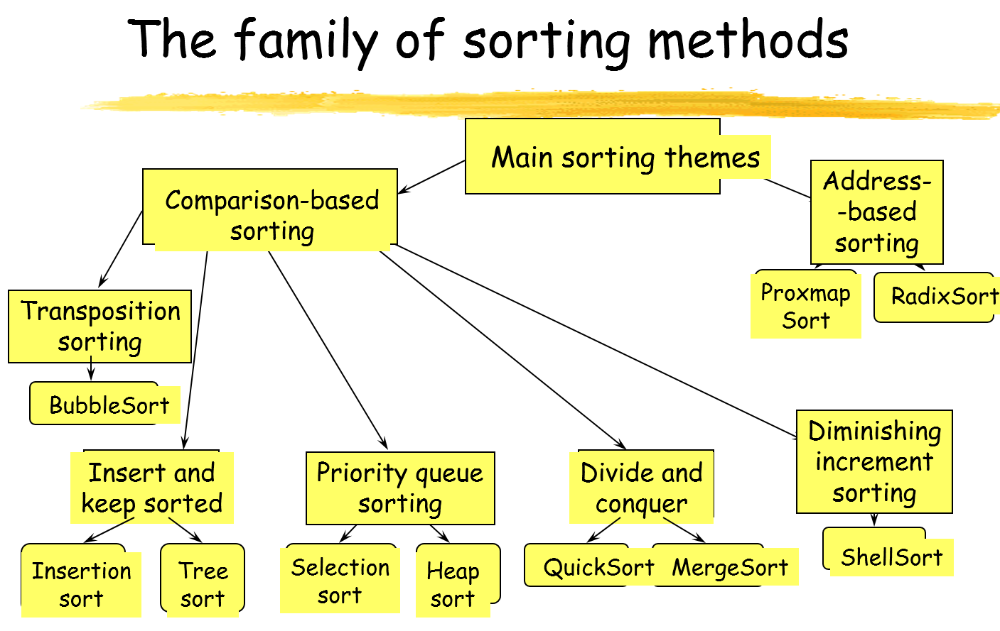
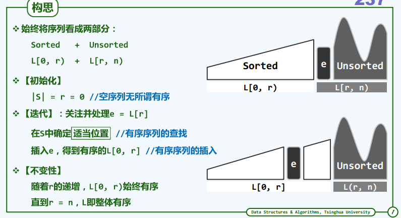
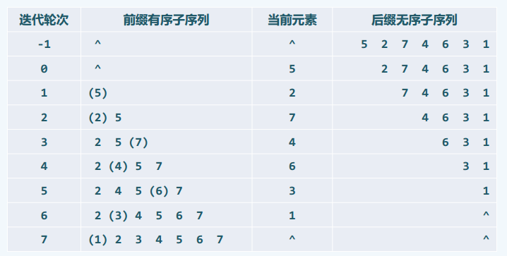
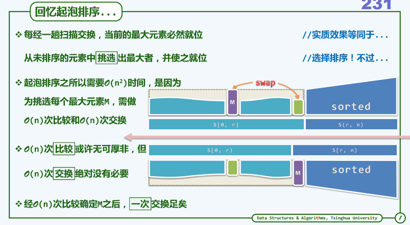
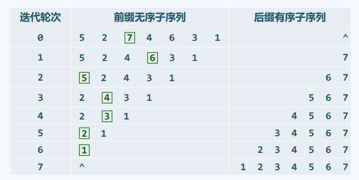
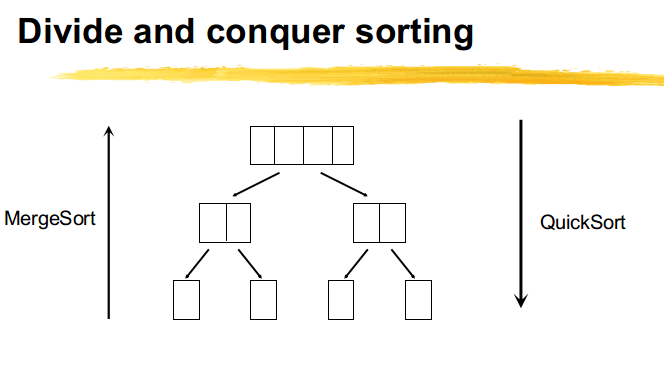
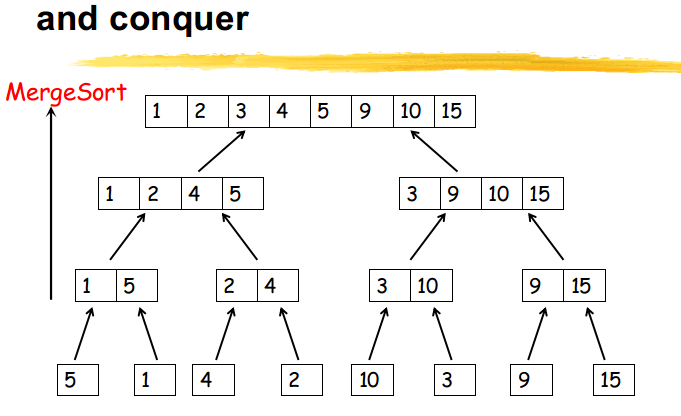
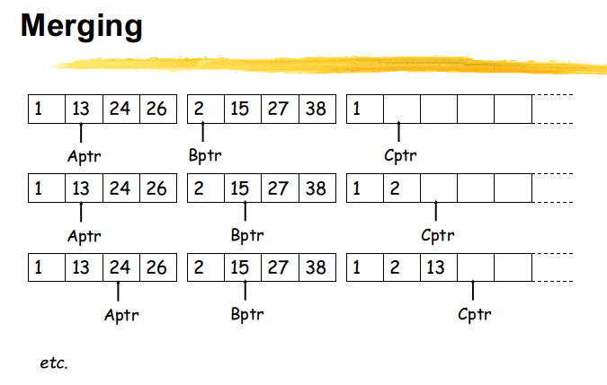

<!DOCTYPE html>


<html lang="zh-Hans">
<head>
  <!-- hexo-inject:begin --><!-- hexo-inject:end --><meta charset="UTF-8">
<meta name="viewport" content="width=device-width, initial-scale=1, maximum-scale=2">
<meta name="theme-color" content="#222">
<meta name="generator" content="Hexo 3.9.0">
  <link rel="apple-touch-icon" sizes="180x180" href="/images/apple-touch-icon-next.png?v=7.4.0">
  <link rel="icon" type="image/png" sizes="32x32" href="/images/favicon-32x32-next.png?v=7.4.0">
  <link rel="icon" type="image/png" sizes="16x16" href="/images/favicon-16x16-next.png?v=7.4.0">
  <link rel="mask-icon" href="/images/logo.svg?v=7.4.0" color="#222">

<link rel="stylesheet" href="/css/main.css?v=7.4.0">


<link rel="stylesheet" href="/lib/font-awesome/css/font-awesome.min.css?v=4.7.0">


<script id="hexo-configurations">
  var NexT = window.NexT || {};
  var CONFIG = {
    root: '/',
    scheme: 'Muse',
    version: '7.4.0',
    exturl: false,
    sidebar: {"position":"left","display":"post","offset":12,"onmobile":false},
    copycode: {"enable":false,"show_result":false,"style":null},
    back2top: {"enable":true,"sidebar":false,"scrollpercent":false},
    bookmark: {"enable":false,"color":"#222","save":"auto"},
    fancybox: false,
    mediumzoom: false,
    lazyload: false,
    pangu: false,
    algolia: {
      appID: '',
      apiKey: '',
      indexName: '',
      hits: {"per_page":10},
      labels: {"input_placeholder":"Search for Posts","hits_empty":"We didn't find any results for the search: ${query}","hits_stats":"${hits} results found in ${time} ms"}
    },
    localsearch: {"enable":false,"trigger":"auto","top_n_per_article":1,"unescape":false,"preload":false},
    path: 'search.xml',
    motion: {"enable":true,"async":false,"transition":{"post_block":"fadeIn","post_header":"slideDownIn","post_body":"slideDownIn","coll_header":"slideLeftIn","sidebar":"slideUpIn"}},
    translation: {
      copy_button: 'Copy',
      copy_success: 'Copied',
      copy_failure: 'Copy failed'
    },
    sidebarPadding: 40
  };
</script>

  <meta name="description" content="Sorting 1. Introduction stable: if \(i &amp;lt; j\) and \(K_i = K_j\), then \(R_i\) precedes \(R_j\) in the sorted list. Internal sort vs. external sort: In internal sorting all the data to sort is stored">
<meta name="keywords" content="sorting">
<meta property="og:type" content="article">
<meta property="og:title" content="sorting">
<meta property="og:url" content="https://yanruibo.github.io/2016/09/13/sorting/index.html">
<meta property="og:site_name" content="Blog">
<meta property="og:description" content="Sorting 1. Introduction stable: if \(i &amp;lt; j\) and \(K_i = K_j\), then \(R_i\) precedes \(R_j\) in the sorted list. Internal sort vs. external sort: In internal sorting all the data to sort is stored">
<meta property="og:locale" content="zh-Hans">
<meta property="og:image" content="https://yanruibo.github.io/2016/09/13/sorting/the-family-of-sorting-methods.png">
<meta property="og:image" content="https://yanruibo.github.io/2016/09/13/sorting/insertion-sort-idea.png">
<meta property="og:image" content="https://yanruibo.github.io/2016/09/13/sorting/insertion-sort-instance.png">
<meta property="og:image" content="https://yanruibo.github.io/2016/09/13/sorting/selection-sort-idea.png">
<meta property="og:image" content="https://yanruibo.github.io/2016/09/13/sorting/selection-sort-instance.png">
<meta property="og:image" content="https://yanruibo.github.io/2016/09/13/sorting/quicksort-example.png">
<meta property="og:image" content="https://yanruibo.github.io/2016/09/13/sorting/merge-sort.png">
<meta property="og:image" content="https://yanruibo.github.io/2016/09/13/sorting/merge-sort-conquer.png">
<meta property="og:image" content="https://yanruibo.github.io/2016/09/13/sorting/merging.png">
<meta property="og:updated_time" content="2016-12-02T14:18:06.000Z">
<meta name="twitter:card" content="summary">
<meta name="twitter:title" content="sorting">
<meta name="twitter:description" content="Sorting 1. Introduction stable: if \(i &amp;lt; j\) and \(K_i = K_j\), then \(R_i\) precedes \(R_j\) in the sorted list. Internal sort vs. external sort: In internal sorting all the data to sort is stored">
<meta name="twitter:image" content="https://yanruibo.github.io/2016/09/13/sorting/the-family-of-sorting-methods.png">
  <link rel="canonical" href="https://yanruibo.github.io/2016/09/13/sorting/">


<script id="page-configurations">
  // https://hexo.io/docs/variables.html
  CONFIG.page = {
    sidebar: "",
    isHome: false,
    isPost: true,
    isPage: false,
    isArchive: false
  };
</script>

  <title>sorting | Blog</title>
  


  <noscript>
  <style>
  .use-motion .brand,
  .use-motion .menu-item,
  .sidebar-inner,
  .use-motion .post-block,
  .use-motion .pagination,
  .use-motion .comments,
  .use-motion .post-header,
  .use-motion .post-body,
  .use-motion .collection-header { opacity: initial; }

  .use-motion .logo,
  .use-motion .site-title,
  .use-motion .site-subtitle {
    opacity: initial;
    top: initial;
  }

  .use-motion .logo-line-before i { left: initial; }
  .use-motion .logo-line-after i { right: initial; }
  </style>
</noscript><!-- hexo-inject:begin --><!-- hexo-inject:end -->

</head>

<body itemscope itemtype="http://schema.org/WebPage" lang="zh-Hans">
  <!-- hexo-inject:begin --><!-- hexo-inject:end --><div class="container use-motion">
    <div class="headband"></div>

    <header id="header" class="header" itemscope itemtype="http://schema.org/WPHeader">
      <div class="header-inner"><div class="site-brand-container">
  <div class="site-meta">

    <div>
      <a href="/" class="brand" rel="start">
        <span class="logo-line-before"><i></i></span>
        <span class="site-title">Blog</span>
        <span class="logo-line-after"><i></i></span>
      </a>
    </div>
        <p class="site-subtitle">Summary for Comprehensive Learning</p>
      
  </div>

  <div class="site-nav-toggle">
    <button aria-label="Toggle navigation bar">
      <span class="btn-bar"></span>
      <span class="btn-bar"></span>
      <span class="btn-bar"></span>
    </button>
  </div>
</div>


<nav class="site-nav">
  
  <ul id="menu" class="menu">
      
      
      
        
        <li class="menu-item menu-item-home">
      
    

    <a href="/" rel="section"><i class="menu-item-icon fa fa-fw fa-home"></i> <br>Home</a>

  </li>
      
      
      
        
        <li class="menu-item menu-item-about">
      
    

    <a href="/about/" rel="section"><i class="menu-item-icon fa fa-fw fa-user"></i> <br>About</a>

  </li>
      
      
      
        
        <li class="menu-item menu-item-tags">
      
    

    <a href="/tags/" rel="section"><i class="menu-item-icon fa fa-fw fa-tags"></i> <br>Tags</a>

  </li>
      
      
      
        
        <li class="menu-item menu-item-categories">
      
    

    <a href="/categories/" rel="section"><i class="menu-item-icon fa fa-fw fa-th"></i> <br>Categories</a>

  </li>
      
      
      
        
        <li class="menu-item menu-item-archives">
      
    

    <a href="/archives/" rel="section"><i class="menu-item-icon fa fa-fw fa-archive"></i> <br>Archives</a>

  </li>
  </ul>

    

</nav>
</div>
    </header>

    
  <div class="back-to-top">
    <i class="fa fa-arrow-up"></i>
    <span>0%</span>
  </div>


    <main id="main" class="main">
      <div class="main-inner">
        <div class="content-wrap">
          <div id="content" class="content">
            

  <div id="posts" class="posts-expand">
      <article itemscope itemtype="http://schema.org/Article">
  
  
  
  <div class="post-block post">
    <link itemprop="mainEntityOfPage" href="https://yanruibo.github.io/2016/09/13/sorting/">

    <span hidden itemprop="author" itemscope itemtype="http://schema.org/Person">
      <meta itemprop="name" content="yrb">
      <meta itemprop="description" content="">
      <meta itemprop="image" content="/images/avatar.jpg">
    </span>

    <span hidden itemprop="publisher" itemscope itemtype="http://schema.org/Organization">
      <meta itemprop="name" content="Blog">
    </span>
      <header class="post-header">
        <h1 class="post-title" itemprop="name headline">sorting

          
        </h1>

        <div class="post-meta">
            <span class="post-meta-item">
              <span class="post-meta-item-icon">
                <i class="fa fa-calendar-o"></i>
              </span>
              <span class="post-meta-item-text">Posted on</span>

              
                
              

              <time title="Created: 2016-09-13 14:23:05" itemprop="dateCreated datePublished" datetime="2016-09-13T14:23:05+08:00">2016-09-13</time>
            </span>
          
            

            
              <span class="post-meta-item">
                <span class="post-meta-item-icon">
                  <i class="fa fa-calendar-check-o"></i>
                </span>
                <span class="post-meta-item-text">Edited on</span>
                <time title="Modified: 2016-12-02 22:18:06" itemprop="dateModified" datetime="2016-12-02T22:18:06+08:00">2016-12-02</time>
              </span>
            
          
            <span class="post-meta-item">
              <span class="post-meta-item-icon">
                <i class="fa fa-folder-o"></i>
              </span>
              <span class="post-meta-item-text">In</span>
              
                <span itemprop="about" itemscope itemtype="http://schema.org/Thing"><a href="/categories/data-structures-and-algorithms/" itemprop="url" rel="index"><span itemprop="name">data structures and algorithms</span></a></span>

                
                
              
            </span>
          

          

        </div>
      </header>

    
    
    
    <div class="post-body" itemprop="articleBody">

      
        <h1 id="sorting">Sorting</h1>
<h2 id="introduction">1. Introduction</h2>
<p><strong>stable</strong>:<br>
if <span class="math inline">\(i &lt; j\)</span> and <span class="math inline">\(K_i = K_j\)</span>, then <span class="math inline">\(R_i\)</span> precedes <span class="math inline">\(R_j\)</span> in the sorted list.</p>
<p><strong>Internal sort vs. external sort</strong>:<br>
In internal sorting all the data to sort is stored in memory at all times while sorting is in progress. In external sorting data is stored outside memory (like on disk) and only loaded into memory in small chunks. External sorting is usually applied in cases when data can't fit into memory entirely.</p>
<p>So in internal sorting you can do something like shell sort - just access whatever array elements you want at whatever moment you want. You can't do that in external sorting - the array is not entirely in memory, so you can't just randomly access any element in memory and accessing it randomly on disk is usually extremely slow. The external sorting algorithm has to deal with loading and unloading chunks of data in optimal manner.<br>
<a id="more"></a> </p>
<p>key是关键码，排序的准则。</p>
<p>types of comparison-based sorting algorithm</p>
<ul>
<li><p>Insertion Sorting</p>
<ul>
<li>insert and keep sorted</li>
<li>Shell sort [diminishing increment sorting]</li>
</ul></li>
<li><p>transposition sorting[Bubble sort and Quick sort ]</p></li>
<li><p>Selection sort [priority queue sorting]</p></li>
<li><p>Merge sort [divide and conquer sorting]</p></li>
<li><p>Always insert in the correct position</p>
<ul>
<li>Simple inserting, BST</li>
</ul></li>
<li><p>An example is using a Binary Search Tree which gives the TreeSort</p></li>
<li><p>An in-order traversal visits each element in the tree in ascending order</p></li>
<li><p>O(n log n) because log n to find insertion place multiplied by the number of elements to be inserted</p></li>
<li><p>插入排序的寻找适当元素的方法可以采用二叉查找树树提高查找的效率。</p></li>
</ul>
<p>其中稳定的排序算法有直接插入排序，冒泡排序和归并排序。</p>
<h2 id="insertion-sorting-algorithm">2. Insertion Sorting Algorithm</h2>
<ul>
<li>Binary insertion sort
<ul>
<li>sequential search --&gt; binary search</li>
<li>reduce # of comparisons, # of moves unchanged</li>
</ul></li>
<li>List insertion sort
<ul>
<li>array --&gt; linked list</li>
<li>sequential search, move --&gt; 0</li>
</ul></li>
</ul>
<h3 id="算法思路">2.1 算法思路</h3>
<p>算法的思路可简要描述为：始终将整个序列视作并切分为两部分：有序的前缀，无序的后缀；通过迭代，反复地将后缀的首元素转移至前缀中。<br>
由此亦可看出插入排序算法的不变性：<br>
<strong>在任何时刻，相对于当前节点e=S[r]，前缀S[0,r)总是也已有序</strong><br>
算法开始时该前缀为空，不变性自然满足。<br>
</p>
<h3 id="实例">2.2 实例</h3>
<p>插入排序算法的一个实例，如下所示： </p>
<h3 id="代码">2.3 代码</h3>
<figure class="highlight c"><table><tr><td class="gutter"><pre><span class="line">1</span><br><span class="line">2</span><br><span class="line">3</span><br><span class="line">4</span><br><span class="line">5</span><br><span class="line">6</span><br><span class="line">7</span><br><span class="line">8</span><br><span class="line">9</span><br><span class="line">10</span><br><span class="line">11</span><br><span class="line">12</span><br><span class="line">13</span><br><span class="line">14</span><br><span class="line">15</span><br><span class="line">16</span><br><span class="line">17</span><br><span class="line">18</span><br><span class="line">19</span><br><span class="line">20</span><br><span class="line">21</span><br><span class="line">22</span><br><span class="line">23</span><br><span class="line">24</span><br><span class="line">25</span><br><span class="line">26</span><br><span class="line">27</span><br><span class="line">28</span><br><span class="line">29</span><br><span class="line">30</span><br><span class="line">31</span><br><span class="line">32</span><br><span class="line">33</span><br><span class="line">34</span><br><span class="line">35</span><br><span class="line">36</span><br><span class="line">37</span><br><span class="line">38</span><br><span class="line">39</span><br><span class="line">40</span><br><span class="line">41</span><br><span class="line">42</span><br><span class="line">43</span><br><span class="line">44</span><br><span class="line">45</span><br><span class="line">46</span><br><span class="line">47</span><br><span class="line">48</span><br><span class="line">49</span><br><span class="line">50</span><br><span class="line">51</span><br><span class="line">52</span><br><span class="line">53</span><br><span class="line">54</span><br><span class="line">55</span><br></pre></td><td class="code"><pre><span class="line"><span class="meta">#<span class="meta-keyword">include</span> <span class="meta-string">&lt;stdio.h&gt;</span></span></span><br><span class="line"></span><br><span class="line"><span class="function"><span class="keyword">void</span> <span class="title">print_array</span><span class="params">(<span class="keyword">int</span> a[], <span class="keyword">int</span> len)</span></span></span><br><span class="line"><span class="function"></span>&#123;</span><br><span class="line">    <span class="keyword">int</span> i;</span><br><span class="line">    <span class="keyword">for</span>(i = <span class="number">0</span>; i&lt;len; ++i)</span><br><span class="line">    &#123;</span><br><span class="line">        <span class="built_in">printf</span>(<span class="string">"%d "</span>,a[i]);</span><br><span class="line">    &#125;</span><br><span class="line">    <span class="built_in">printf</span>(<span class="string">"\n"</span>);</span><br><span class="line">&#125;</span><br><span class="line"></span><br><span class="line"><span class="function"><span class="keyword">void</span> <span class="title">insertion_sort</span><span class="params">(<span class="keyword">int</span> a[], <span class="keyword">int</span> len)</span></span></span><br><span class="line"><span class="function"></span>&#123;</span><br><span class="line">    <span class="keyword">int</span> i,j;</span><br><span class="line">    <span class="keyword">for</span>(i = <span class="number">1</span>; i&lt;len; ++i)</span><br><span class="line">    &#123;</span><br><span class="line">        <span class="keyword">int</span> insert_value = a[i];</span><br><span class="line">        <span class="keyword">for</span>(j=i;j&gt;<span class="number">0</span>; --j)</span><br><span class="line">        &#123;</span><br><span class="line">            <span class="keyword">if</span>(a[j<span class="number">-1</span>]&gt;insert_value)</span><br><span class="line">            &#123;</span><br><span class="line">                a[j] = a[j<span class="number">-1</span>];</span><br><span class="line">            &#125;</span><br><span class="line">            <span class="keyword">else</span></span><br><span class="line">            &#123;</span><br><span class="line">                <span class="keyword">break</span>;</span><br><span class="line">            &#125;</span><br><span class="line">        &#125;</span><br><span class="line">        <span class="comment">//此处跳出循环时，在不满足条件时，已经执行了一次--j</span></span><br><span class="line">        a[j] = insert_value;</span><br><span class="line">        print_array(a,<span class="number">10</span>);</span><br><span class="line">    &#125;</span><br><span class="line">&#125;</span><br><span class="line"></span><br><span class="line"></span><br><span class="line"><span class="function"><span class="keyword">int</span> <span class="title">main</span><span class="params">(<span class="keyword">int</span> argc, <span class="keyword">char</span> *argv[])</span></span></span><br><span class="line"><span class="function"></span>&#123;</span><br><span class="line">    <span class="keyword">int</span> a[] = &#123;<span class="number">5</span>,<span class="number">4</span>,<span class="number">9</span>,<span class="number">8</span>,<span class="number">7</span>,<span class="number">6</span>,<span class="number">0</span>,<span class="number">1</span>,<span class="number">3</span>,<span class="number">2</span>&#125;;</span><br><span class="line">    print_array(a,<span class="number">10</span>);</span><br><span class="line">    insertion_sort(a,<span class="number">10</span>);</span><br><span class="line">    print_array(a,<span class="number">10</span>);</span><br><span class="line">&#125;</span><br><span class="line">output:</span><br><span class="line"><span class="number">5</span> <span class="number">4</span> <span class="number">9</span> <span class="number">8</span> <span class="number">7</span> <span class="number">6</span> <span class="number">0</span> <span class="number">1</span> <span class="number">3</span> <span class="number">2</span> </span><br><span class="line"><span class="number">4</span> <span class="number">5</span> <span class="number">9</span> <span class="number">8</span> <span class="number">7</span> <span class="number">6</span> <span class="number">0</span> <span class="number">1</span> <span class="number">3</span> <span class="number">2</span> </span><br><span class="line"><span class="number">4</span> <span class="number">5</span> <span class="number">9</span> <span class="number">8</span> <span class="number">7</span> <span class="number">6</span> <span class="number">0</span> <span class="number">1</span> <span class="number">3</span> <span class="number">2</span> </span><br><span class="line"><span class="number">4</span> <span class="number">5</span> <span class="number">8</span> <span class="number">9</span> <span class="number">7</span> <span class="number">6</span> <span class="number">0</span> <span class="number">1</span> <span class="number">3</span> <span class="number">2</span> </span><br><span class="line"><span class="number">4</span> <span class="number">5</span> <span class="number">7</span> <span class="number">8</span> <span class="number">9</span> <span class="number">6</span> <span class="number">0</span> <span class="number">1</span> <span class="number">3</span> <span class="number">2</span> </span><br><span class="line"><span class="number">4</span> <span class="number">5</span> <span class="number">6</span> <span class="number">7</span> <span class="number">8</span> <span class="number">9</span> <span class="number">0</span> <span class="number">1</span> <span class="number">3</span> <span class="number">2</span> </span><br><span class="line"><span class="number">0</span> <span class="number">4</span> <span class="number">5</span> <span class="number">6</span> <span class="number">7</span> <span class="number">8</span> <span class="number">9</span> <span class="number">1</span> <span class="number">3</span> <span class="number">2</span> </span><br><span class="line"><span class="number">0</span> <span class="number">1</span> <span class="number">4</span> <span class="number">5</span> <span class="number">6</span> <span class="number">7</span> <span class="number">8</span> <span class="number">9</span> <span class="number">3</span> <span class="number">2</span> </span><br><span class="line"><span class="number">0</span> <span class="number">1</span> <span class="number">3</span> <span class="number">4</span> <span class="number">5</span> <span class="number">6</span> <span class="number">7</span> <span class="number">8</span> <span class="number">9</span> <span class="number">2</span> </span><br><span class="line"><span class="number">0</span> <span class="number">1</span> <span class="number">2</span> <span class="number">3</span> <span class="number">4</span> <span class="number">5</span> <span class="number">6</span> <span class="number">7</span> <span class="number">8</span> <span class="number">9</span> </span><br><span class="line"><span class="number">0</span> <span class="number">1</span> <span class="number">2</span> <span class="number">3</span> <span class="number">4</span> <span class="number">5</span> <span class="number">6</span> <span class="number">7</span> <span class="number">8</span> <span class="number">9</span></span><br></pre></td></tr></table></figure>
<h2 id="selection-sort">3. Selection Sort</h2>
<p>自己的理解，更精确的是selection Max sort.每次从前缀中选择最大的，放入后缀的最前面。</p>
<h3 id="构思">3.1 构思</h3>
<p>与插入排序类似，该算法也将序列划分为无序前缀和有序后缀两部分，此外，还要求前缀不大于后缀，如此，每次只需从前缀中选出最大者，并作为最小元素转移至后缀中，即可使有序部分的范围不断扩张。<br>
同样的，上述描述也给出了选择排序算法过程所具有的不变性：<br>
<strong>在任何时刻，后缀S(r,n)已经有序，且不小于前缀S[0,r]</strong><br>
在算法的初始时刻，后缀为空，不变形自然满足。<br>
序列的结构如下所示： </p>
<h3 id="实例-1">3.2 实例</h3>
<p>选择排序算法的一个实例，如下所示： </p>
<h3 id="代码-1">3.3 代码</h3>
<figure class="highlight plain"><table><tr><td class="gutter"><pre><span class="line">1</span><br><span class="line">2</span><br><span class="line">3</span><br><span class="line">4</span><br><span class="line">5</span><br><span class="line">6</span><br><span class="line">7</span><br><span class="line">8</span><br><span class="line">9</span><br><span class="line">10</span><br><span class="line">11</span><br><span class="line">12</span><br><span class="line">13</span><br><span class="line">14</span><br><span class="line">15</span><br><span class="line">16</span><br><span class="line">17</span><br><span class="line">18</span><br><span class="line">19</span><br><span class="line">20</span><br><span class="line">21</span><br><span class="line">22</span><br><span class="line">23</span><br><span class="line">24</span><br><span class="line">25</span><br><span class="line">26</span><br><span class="line">27</span><br><span class="line">28</span><br><span class="line">29</span><br><span class="line">30</span><br><span class="line">31</span><br><span class="line">32</span><br><span class="line">33</span><br><span class="line">34</span><br><span class="line">35</span><br><span class="line">36</span><br><span class="line">37</span><br><span class="line">38</span><br><span class="line">39</span><br><span class="line">40</span><br><span class="line">41</span><br><span class="line">42</span><br><span class="line">43</span><br><span class="line">44</span><br><span class="line">45</span><br><span class="line">46</span><br><span class="line">47</span><br><span class="line">48</span><br><span class="line">49</span><br><span class="line">50</span><br><span class="line">51</span><br><span class="line">52</span><br><span class="line">53</span><br><span class="line">54</span><br><span class="line">55</span><br><span class="line">56</span><br><span class="line">57</span><br><span class="line">58</span><br><span class="line">59</span><br><span class="line">60</span><br><span class="line">61</span><br><span class="line">62</span><br></pre></td><td class="code"><pre><span class="line">#include &lt;stdio.h&gt;</span><br><span class="line"></span><br><span class="line">void swap(int *a, int *b)</span><br><span class="line">&#123;</span><br><span class="line">    *a = *a ^ *b;</span><br><span class="line">    *b = *a ^ *b;</span><br><span class="line">    *a = *a ^ *b;</span><br><span class="line">&#125;</span><br><span class="line"></span><br><span class="line">void print_array(int a[], int len)</span><br><span class="line">&#123;</span><br><span class="line">    int i;</span><br><span class="line">    for(i = 0; i&lt;len; ++i)</span><br><span class="line">    &#123;</span><br><span class="line">        printf(&quot;%d &quot;,a[i]);</span><br><span class="line">    &#125;</span><br><span class="line">    printf(&quot;\n&quot;);</span><br><span class="line">&#125;</span><br><span class="line"></span><br><span class="line">void selection_sort(int a[],int len)</span><br><span class="line">&#123;</span><br><span class="line">    int i;</span><br><span class="line">    int j;</span><br><span class="line">    int max_index;</span><br><span class="line">    for(i = len-1; i&gt;0;--i)</span><br><span class="line">    &#123;</span><br><span class="line">        max_index = i; </span><br><span class="line">        for(j=i-1;j&gt;=0;--j)</span><br><span class="line">        &#123;</span><br><span class="line">            if(a[max_index]&lt;a[j])</span><br><span class="line">            &#123;</span><br><span class="line">                max_index = j;</span><br><span class="line">            &#125;</span><br><span class="line">        &#125;</span><br><span class="line">        //每一次选择最大的交换的过程中会导致不稳定。</span><br><span class="line">        if(max_index!=i)</span><br><span class="line">        &#123;</span><br><span class="line">            swap(&amp;a[max_index],&amp;a[i]);</span><br><span class="line">        &#125;</span><br><span class="line">        print_array(a,10);</span><br><span class="line">    &#125;</span><br><span class="line">&#125;</span><br><span class="line"></span><br><span class="line">int main(int argc, char *argv[])</span><br><span class="line">&#123;</span><br><span class="line">    int a[] = &#123;5,4,9,8,7,6,0,1,3,2&#125;;</span><br><span class="line">    print_array(a,10);</span><br><span class="line">    selection_sort(a,10);</span><br><span class="line">    print_array(a,10);</span><br><span class="line">&#125;</span><br><span class="line">output:</span><br><span class="line">5 4 9 8 7 6 0 1 3 2 </span><br><span class="line">5 4 2 8 7 6 0 1 3 9 </span><br><span class="line">5 4 2 3 7 6 0 1 8 9 </span><br><span class="line">5 4 2 3 1 6 0 7 8 9 </span><br><span class="line">5 4 2 3 1 0 6 7 8 9 </span><br><span class="line">0 4 2 3 1 5 6 7 8 9 </span><br><span class="line">0 1 2 3 4 5 6 7 8 9 </span><br><span class="line">0 1 2 3 4 5 6 7 8 9 </span><br><span class="line">0 1 2 3 4 5 6 7 8 9 </span><br><span class="line">0 1 2 3 4 5 6 7 8 9 </span><br><span class="line">0 1 2 3 4 5 6 7 8 9</span><br></pre></td></tr></table></figure>
<h2 id="transposition-sorting---bubble-sort">4. Transposition Sorting - Bubble Sort</h2>
<p>之前写过一篇文章介绍冒泡排序，可以通过本站的搜索功能找到那篇文章。<br>
这里补充一个双向冒泡排序。它的基本思想是首先将第一个记录的关键字和第二个记录的关键字进行比较，若为逆序，即<code>L.r[1].key&gt;L.r[2].key</code>，则将两个记录交换，然后比较第二个和第三个记录的关键字，依此类推，直至第<code>n-1</code>个记录的关键字和第<code>n</code>个记录的关键字比较过为止。这时一趟冒泡排序，其结果是使得关键字最大的记录被安置到最后一个记录的位置上。</p>
<p>第一趟排序之后进行第二趟冒泡排序，将第n-2个记录的关键字与第n-1个记录的关键字进行比较，若为逆序，即<code>L.r[n-2].key&gt;L.r[n-1].key</code>,则将两个记录交换，然后比较第n-3个记录和n-2个记录的关键字，依此类推，直至第1个记录的关键字和第2个记录的关键字比较过为止。其结果是使得关键字最小的记录被安置到第1个记录的位置上。<br>
再对剩余的n-2个记录进行上述同样的操作，其结果是使关键字次大的记录被安置到第n-1个记录的位置，是关键字次小的记录被安置到第2个记录的位置。</p>
<p>一般的，第i趟的冒泡排序是：若i为奇数，则从<code>L.r[i/2+1]~L.r[n-i/2]</code>依次比较相邻的两个关键字，并在逆序的时候交换相邻记录，其结果是这<code>n-i+1</code>个记录中关键字最大的记录被交换到第<code>n-i/2</code>的位置上；若i为偶数，则从<code>L.r[n-i/2]~L.r[i/2]</code>依次比较相邻两个记录的关键字，并在逆序时交换相邻记录，其结果是这<code>n-i+1</code>个记录中关键字最小的记录被交换到<code>i/2</code>的位置上。整个排序过程需要进行<code>K(1&lt;=K&lt;n)</code>趟冒泡排序，同样判别冒泡排序结束的条件是：在一趟排序过程中没有进行过交换记录的操作。</p>
<figure class="highlight plain"><table><tr><td class="gutter"><pre><span class="line">1</span><br><span class="line">2</span><br><span class="line">3</span><br><span class="line">4</span><br><span class="line">5</span><br><span class="line">6</span><br><span class="line">7</span><br><span class="line">8</span><br><span class="line">9</span><br><span class="line">10</span><br><span class="line">11</span><br><span class="line">12</span><br><span class="line">13</span><br><span class="line">14</span><br><span class="line">15</span><br><span class="line">16</span><br><span class="line">17</span><br><span class="line">18</span><br><span class="line">19</span><br><span class="line">20</span><br><span class="line">21</span><br><span class="line">22</span><br><span class="line">23</span><br><span class="line">24</span><br><span class="line">25</span><br><span class="line">26</span><br><span class="line">27</span><br></pre></td><td class="code"><pre><span class="line">#include &lt;stdio.h&gt;</span><br><span class="line">void swap(int *a, int *b)</span><br><span class="line">&#123;</span><br><span class="line">    *a = *a ^ *b;</span><br><span class="line">    *b = *a ^ *b;</span><br><span class="line">    *a = *a ^ *b;</span><br><span class="line">&#125;</span><br><span class="line"></span><br><span class="line">void print_array(int a[], int len)</span><br><span class="line">&#123;</span><br><span class="line">    int i;</span><br><span class="line">    for(i = 0; i&lt;len; ++i)</span><br><span class="line">    &#123;</span><br><span class="line">        printf(&quot;%d &quot;,a[i]);</span><br><span class="line">    &#125;</span><br><span class="line">    printf(&quot;\n&quot;);</span><br><span class="line">&#125;</span><br><span class="line"></span><br><span class="line"></span><br><span class="line">int main(int argc, char *argv[])</span><br><span class="line">&#123;</span><br><span class="line">    int a[] = &#123;5,4,9,8,7,6,0,1,3,2&#125;;</span><br><span class="line">    print_array(a,10);</span><br><span class="line">    //insertion_sort(a,10);</span><br><span class="line">    bubble2sort(a,10);</span><br><span class="line">    print_array(a,10);</span><br><span class="line">&#125;</span><br></pre></td></tr></table></figure>
<p>output: <figure class="highlight plain"><table><tr><td class="gutter"><pre><span class="line">1</span><br><span class="line">2</span><br><span class="line">3</span><br><span class="line">4</span><br><span class="line">5</span><br><span class="line">6</span><br><span class="line">7</span><br><span class="line">8</span><br><span class="line">9</span><br><span class="line">10</span><br><span class="line">11</span><br><span class="line">12</span><br></pre></td><td class="code"><pre><span class="line">5 4 9 8 7 6 0 1 3 2 </span><br><span class="line">4 5 8 7 6 0 1 3 2 9 </span><br><span class="line">0 4 5 8 7 6 1 2 3 9 </span><br><span class="line">0 4 5 7 6 1 2 3 8 9 </span><br><span class="line">0 1 4 5 7 6 2 3 8 9 </span><br><span class="line">0 1 4 5 6 2 3 7 8 9 </span><br><span class="line">0 1 2 4 5 6 3 7 8 9 </span><br><span class="line">0 1 2 4 5 3 6 7 8 9 </span><br><span class="line">0 1 2 3 4 5 6 7 8 9 </span><br><span class="line">0 1 2 3 4 5 6 7 8 9 </span><br><span class="line">0 1 2 3 4 5 6 7 8 9 </span><br><span class="line">0 1 2 3 4 5 6 7 8 9</span><br></pre></td></tr></table></figure></p>
<h2 id="quicksort">5. QuickSort</h2>
<ul>
<li>As its name implies, QuickSort is the fastest known sorting algorithm in practice (address-based sorts can be faster)</li>
<li>It was devised by C.A.R. Hoare in 1962</li>
<li>Its average running time is <span class="math inline">\(O(nlogn)\)</span> and it is very fast</li>
<li>It has worst-case performance of <span class="math inline">\(O(n^2)\)</span> but this can be made very unlikely with little effort</li>
</ul>
<p>The idea is as follows:</p>
<ol type="1">
<li>If the number of elements to be sorted is 0 or 1, then return</li>
<li>Pick any element, v (this is called the pivot)</li>
<li>Partition the other elements into two disjoint sets, <span class="math inline">\(S_1\)</span> of elements &lt;= v, and <span class="math inline">\(S_2\)</span> of elements &gt; v</li>
<li>Return QuickSort(<span class="math inline">\(S_1\)</span>) followed by v followed by QuickSort(<span class="math inline">\(S_2\)</span>)</li>
</ol>
<p>quicksort example:</p>
<figure>
<figcaption>quicksort example</figcaption>
</figure>
<p>Pseudo code for partitioning: <figure class="highlight plain"><table><tr><td class="gutter"><pre><span class="line">1</span><br><span class="line">2</span><br><span class="line">3</span><br><span class="line">4</span><br><span class="line">5</span><br><span class="line">6</span><br><span class="line">7</span><br><span class="line">8</span><br><span class="line">9</span><br><span class="line">10</span><br><span class="line">11</span><br><span class="line">12</span><br></pre></td><td class="code"><pre><span class="line">pivotPos = middle of array a;</span><br><span class="line">swap a[pivotPos] with a[first];   // Move the pivot out of the way</span><br><span class="line">swapPos = first + 1;</span><br><span class="line">for each element in the array from swapPos to last do:</span><br><span class="line">    // If the current element is smaller than pivot we</span><br><span class="line">    // move it towards start of array</span><br><span class="line">    if (a[currentElement] &lt; a[first]):</span><br><span class="line">        swap a[swapPos] with a[currentElement];</span><br><span class="line">         increment swapPos by 1;</span><br><span class="line">    // Now move the pivot back to its rightful place</span><br><span class="line">    swap a[first] with a[swapPos-1];</span><br><span class="line">    return swapPos-1;   // Pivot position</span><br></pre></td></tr></table></figure></p>
<p>code: <figure class="highlight c"><table><tr><td class="gutter"><pre><span class="line">1</span><br><span class="line">2</span><br><span class="line">3</span><br><span class="line">4</span><br><span class="line">5</span><br><span class="line">6</span><br><span class="line">7</span><br><span class="line">8</span><br><span class="line">9</span><br><span class="line">10</span><br><span class="line">11</span><br><span class="line">12</span><br><span class="line">13</span><br><span class="line">14</span><br><span class="line">15</span><br><span class="line">16</span><br><span class="line">17</span><br><span class="line">18</span><br><span class="line">19</span><br><span class="line">20</span><br><span class="line">21</span><br><span class="line">22</span><br><span class="line">23</span><br><span class="line">24</span><br><span class="line">25</span><br><span class="line">26</span><br><span class="line">27</span><br><span class="line">28</span><br><span class="line">29</span><br><span class="line">30</span><br><span class="line">31</span><br><span class="line">32</span><br><span class="line">33</span><br><span class="line">34</span><br><span class="line">35</span><br><span class="line">36</span><br><span class="line">37</span><br><span class="line">38</span><br><span class="line">39</span><br><span class="line">40</span><br><span class="line">41</span><br><span class="line">42</span><br><span class="line">43</span><br><span class="line">44</span><br><span class="line">45</span><br><span class="line">46</span><br><span class="line">47</span><br><span class="line">48</span><br><span class="line">49</span><br><span class="line">50</span><br><span class="line">51</span><br><span class="line">52</span><br><span class="line">53</span><br><span class="line">54</span><br><span class="line">55</span><br><span class="line">56</span><br><span class="line">57</span><br><span class="line">58</span><br><span class="line">59</span><br><span class="line">60</span><br><span class="line">61</span><br><span class="line">62</span><br><span class="line">63</span><br><span class="line">64</span><br><span class="line">65</span><br><span class="line">66</span><br><span class="line">67</span><br><span class="line">68</span><br><span class="line">69</span><br><span class="line">70</span><br><span class="line">71</span><br><span class="line">72</span><br><span class="line">73</span><br><span class="line">74</span><br><span class="line">75</span><br><span class="line">76</span><br><span class="line">77</span><br><span class="line">78</span><br><span class="line">79</span><br><span class="line">80</span><br><span class="line">81</span><br><span class="line">82</span><br><span class="line">83</span><br><span class="line">84</span><br><span class="line">85</span><br><span class="line">86</span><br><span class="line">87</span><br><span class="line">88</span><br><span class="line">89</span><br><span class="line">90</span><br><span class="line">91</span><br><span class="line">92</span><br><span class="line">93</span><br><span class="line">94</span><br><span class="line">95</span><br><span class="line">96</span><br><span class="line">97</span><br><span class="line">98</span><br><span class="line">99</span><br><span class="line">100</span><br><span class="line">101</span><br><span class="line">102</span><br></pre></td><td class="code"><pre><span class="line"><span class="meta">#<span class="meta-keyword">include</span> <span class="meta-string">&lt;stdio.h&gt;</span></span></span><br><span class="line"></span><br><span class="line"><span class="function"><span class="keyword">void</span> <span class="title">swap</span><span class="params">(<span class="keyword">int</span> *a, <span class="keyword">int</span> *b)</span></span></span><br><span class="line"><span class="function"></span>&#123;</span><br><span class="line">    <span class="comment">/*</span></span><br><span class="line"><span class="comment">    *a = *a ^ *b;</span></span><br><span class="line"><span class="comment">    *b = *a ^ *b;</span></span><br><span class="line"><span class="comment">    *a = *a ^ *b;</span></span><br><span class="line"><span class="comment">    */</span></span><br><span class="line">    <span class="keyword">int</span> temp = *b;</span><br><span class="line">    *b = *a;</span><br><span class="line">    *a = temp;</span><br><span class="line"></span><br><span class="line">&#125;</span><br><span class="line"></span><br><span class="line"><span class="function"><span class="keyword">void</span> <span class="title">print_array</span><span class="params">(<span class="keyword">int</span> a[], <span class="keyword">int</span> len)</span></span></span><br><span class="line"><span class="function"></span>&#123;</span><br><span class="line">    <span class="keyword">int</span> i;</span><br><span class="line">    <span class="keyword">for</span>(i = <span class="number">0</span>; i&lt;len; ++i)</span><br><span class="line">    &#123;</span><br><span class="line">        <span class="built_in">printf</span>(<span class="string">"%d "</span>,a[i]);</span><br><span class="line">    &#125;</span><br><span class="line">    <span class="built_in">printf</span>(<span class="string">"\n"</span>);</span><br><span class="line">&#125;</span><br><span class="line"><span class="function"><span class="keyword">int</span> <span class="title">partition1</span><span class="params">(<span class="keyword">int</span> a[], <span class="keyword">int</span> low, <span class="keyword">int</span> high)</span></span></span><br><span class="line"><span class="function"></span>&#123;</span><br><span class="line">    <span class="keyword">int</span> swappos = low+<span class="number">1</span>;</span><br><span class="line">    <span class="comment">//取中间元素为pivot</span></span><br><span class="line">    swap(&amp;a[low],&amp;a[(low+high)/<span class="number">2</span>]);</span><br><span class="line">    <span class="keyword">int</span> pivot = a[low];</span><br><span class="line">    <span class="built_in">printf</span>(<span class="string">"%d\n"</span>,pivot);</span><br><span class="line">    <span class="keyword">int</span> i;</span><br><span class="line">    <span class="keyword">for</span>(i = low+<span class="number">1</span>;i&lt;=high;++i)</span><br><span class="line">    &#123;</span><br><span class="line">        <span class="keyword">if</span>(a[i]&lt;pivot &amp;&amp; swappos==i)</span><br><span class="line">        &#123;</span><br><span class="line">            swappos++;</span><br><span class="line">        &#125;</span><br><span class="line">        <span class="keyword">else</span> <span class="keyword">if</span> (a[i]&lt;pivot &amp;&amp; swappos!=i)</span><br><span class="line">        &#123;</span><br><span class="line">            swap(&amp;a[i],&amp;a[swappos]);</span><br><span class="line">            ++swappos;</span><br><span class="line">        &#125;</span><br><span class="line">    &#125;</span><br><span class="line">    <span class="comment">//swappos的位置为第一个大于pivot的位置，</span></span><br><span class="line">    <span class="comment">//将处在low处的pivot与最后一个小于pivot的（即处于swappos-1处的）元素交换</span></span><br><span class="line">    <span class="keyword">if</span>(low!=swappos<span class="number">-1</span>)</span><br><span class="line">    &#123;</span><br><span class="line">        swap(&amp;a[swappos<span class="number">-1</span>],&amp;a[low]);</span><br><span class="line">    &#125;</span><br><span class="line">    <span class="comment">//print_array(a,10);</span></span><br><span class="line">    <span class="keyword">return</span> swappos<span class="number">-1</span>;</span><br><span class="line">    </span><br><span class="line"></span><br><span class="line">&#125;</span><br><span class="line"></span><br><span class="line"><span class="function"><span class="keyword">int</span> <span class="title">partition2</span><span class="params">(<span class="keyword">int</span> a[], <span class="keyword">int</span> low, <span class="keyword">int</span> high)</span></span></span><br><span class="line"><span class="function"></span>&#123;</span><br><span class="line">    <span class="keyword">int</span> pivotpos = low;</span><br><span class="line">    <span class="comment">//取中间元素为pivot</span></span><br><span class="line">    swap(&amp;a[low],&amp;a[(low+high)/<span class="number">2</span>]);</span><br><span class="line">    <span class="keyword">int</span> pivot = a[low];</span><br><span class="line">    <span class="comment">//printf("%d\n",pivot);</span></span><br><span class="line">    <span class="keyword">int</span> i;</span><br><span class="line">    <span class="keyword">for</span>(i = low+<span class="number">1</span>;i&lt;=high;++i)</span><br><span class="line">    &#123;</span><br><span class="line">        <span class="keyword">if</span> (a[i]&lt;pivot &amp;&amp; ++pivotpos!=i)</span><br><span class="line">        &#123;</span><br><span class="line">            swap(&amp;a[i],&amp;a[pivotpos]);</span><br><span class="line">        &#125;</span><br><span class="line">    &#125;</span><br><span class="line">    <span class="comment">//swappos的位置为第一个大于pivot的位置，</span></span><br><span class="line">    <span class="comment">//将处在low处的pivot与最后一个小于pivot的（即处于swappos-1处的）元素交换</span></span><br><span class="line">    <span class="keyword">if</span>(low!=pivotpos)</span><br><span class="line">    &#123;</span><br><span class="line">        swap(&amp;a[pivotpos],&amp;a[low]);</span><br><span class="line">    &#125;</span><br><span class="line">    <span class="comment">//print_array(a,10);</span></span><br><span class="line">    <span class="keyword">return</span> pivotpos;</span><br><span class="line">&#125;</span><br><span class="line"><span class="function"><span class="keyword">void</span> <span class="title">quicksort</span><span class="params">(<span class="keyword">int</span> a[],<span class="keyword">int</span> low, <span class="keyword">int</span> high)</span></span></span><br><span class="line"><span class="function"></span>&#123;</span><br><span class="line">    <span class="keyword">if</span>(low&lt;high)</span><br><span class="line">    &#123;</span><br><span class="line">        <span class="keyword">int</span> pivotpos = partition2(a,low,high);</span><br><span class="line">        quicksort(a,low,pivotpos<span class="number">-1</span>);</span><br><span class="line">        quicksort(a,pivotpos+<span class="number">1</span>,high);</span><br><span class="line">        </span><br><span class="line">    &#125;</span><br><span class="line">&#125;</span><br><span class="line"><span class="function"><span class="keyword">int</span> <span class="title">main</span><span class="params">(<span class="keyword">int</span> argc, <span class="keyword">char</span> *argv[])</span></span></span><br><span class="line"><span class="function"></span>&#123;</span><br><span class="line">    <span class="keyword">int</span> a[] = &#123;<span class="number">5</span>,<span class="number">4</span>,<span class="number">9</span>,<span class="number">8</span>,<span class="number">7</span>,<span class="number">6</span>,<span class="number">0</span>,<span class="number">1</span>,<span class="number">3</span>,<span class="number">2</span>&#125;;</span><br><span class="line">    print_array(a,<span class="number">10</span>);</span><br><span class="line">    quicksort(a,<span class="number">0</span>,<span class="number">9</span>);</span><br><span class="line">    print_array(a,<span class="number">10</span>);</span><br><span class="line">    <span class="comment">/*</span></span><br><span class="line"><span class="comment">    int a[] = &#123;5,4,9,8,7,6,0,1,3,2&#125;;</span></span><br><span class="line"><span class="comment">    swap(&amp;a[1],&amp;a[1]);</span></span><br><span class="line"><span class="comment">    printf("a=%d\n",a[1]);</span></span><br><span class="line"><span class="comment">    */</span>    </span><br><span class="line">&#125;</span><br></pre></td></tr></table></figure></p>
<p>写代码过程中遇到的坑： 1. 交换函数。用异或交换，如果是交换同一个数，就会出错。 2. partition函数太复杂，逻辑不容易记住。</p>
<p>下面来个简单版本的partition，partition4的介绍参见邓俊辉数据结构C++版12.1节。 <figure class="highlight c"><table><tr><td class="gutter"><pre><span class="line">1</span><br><span class="line">2</span><br><span class="line">3</span><br><span class="line">4</span><br><span class="line">5</span><br><span class="line">6</span><br><span class="line">7</span><br><span class="line">8</span><br><span class="line">9</span><br><span class="line">10</span><br><span class="line">11</span><br><span class="line">12</span><br><span class="line">13</span><br><span class="line">14</span><br><span class="line">15</span><br><span class="line">16</span><br><span class="line">17</span><br><span class="line">18</span><br><span class="line">19</span><br><span class="line">20</span><br><span class="line">21</span><br><span class="line">22</span><br><span class="line">23</span><br><span class="line">24</span><br><span class="line">25</span><br><span class="line">26</span><br><span class="line">27</span><br><span class="line">28</span><br><span class="line">29</span><br><span class="line">30</span><br><span class="line">31</span><br><span class="line">32</span><br><span class="line">33</span><br><span class="line">34</span><br><span class="line">35</span><br><span class="line">36</span><br><span class="line">37</span><br><span class="line">38</span><br><span class="line">39</span><br><span class="line">40</span><br><span class="line">41</span><br><span class="line">42</span><br><span class="line">43</span><br><span class="line">44</span><br><span class="line">45</span><br><span class="line">46</span><br><span class="line">47</span><br><span class="line">48</span><br><span class="line">49</span><br><span class="line">50</span><br><span class="line">51</span><br><span class="line">52</span><br><span class="line">53</span><br><span class="line">54</span><br><span class="line">55</span><br><span class="line">56</span><br><span class="line">57</span><br><span class="line">58</span><br><span class="line">59</span><br><span class="line">60</span><br><span class="line">61</span><br><span class="line">62</span><br><span class="line">63</span><br><span class="line">64</span><br><span class="line">65</span><br><span class="line">66</span><br><span class="line">67</span><br><span class="line">68</span><br><span class="line">69</span><br><span class="line">70</span><br><span class="line">71</span><br><span class="line">72</span><br><span class="line">73</span><br><span class="line">74</span><br><span class="line">75</span><br><span class="line">76</span><br><span class="line">77</span><br><span class="line">78</span><br><span class="line">79</span><br><span class="line">80</span><br><span class="line">81</span><br><span class="line">82</span><br><span class="line">83</span><br><span class="line">84</span><br><span class="line">85</span><br><span class="line">86</span><br><span class="line">87</span><br><span class="line">88</span><br><span class="line">89</span><br><span class="line">90</span><br><span class="line">91</span><br><span class="line">92</span><br><span class="line">93</span><br><span class="line">94</span><br><span class="line">95</span><br><span class="line">96</span><br><span class="line">97</span><br><span class="line">98</span><br><span class="line">99</span><br></pre></td><td class="code"><pre><span class="line"><span class="function"><span class="keyword">int</span> <span class="title">partition3</span><span class="params">(<span class="keyword">int</span> a[], <span class="keyword">int</span> low, <span class="keyword">int</span> high)</span></span></span><br><span class="line"><span class="function"></span>&#123;</span><br><span class="line">    <span class="keyword">int</span> i = low;</span><br><span class="line">    <span class="keyword">int</span> j = high;</span><br><span class="line">    <span class="keyword">int</span> pivot = a[low];</span><br><span class="line">    <span class="built_in">printf</span>(<span class="string">"low=%d,high=%d\nArrayBefore:\n"</span>, low, high );</span><br><span class="line">    print_array(a,<span class="number">12</span>);</span><br><span class="line">    <span class="keyword">while</span>(i&lt;j)</span><br><span class="line">    &#123;</span><br><span class="line">        <span class="keyword">while</span>(i&lt;=high &amp;&amp; a[i]&lt;=pivot)</span><br><span class="line">        &#123;</span><br><span class="line">            ++i;</span><br><span class="line">        &#125;</span><br><span class="line">        <span class="keyword">while</span>(a[j]&gt;pivot)</span><br><span class="line">        &#123;</span><br><span class="line">            --j;</span><br><span class="line">        &#125;</span><br><span class="line">        <span class="keyword">if</span>(i&lt;j)</span><br><span class="line">        &#123;</span><br><span class="line">            swap(&amp;a[i],&amp;a[j]);</span><br><span class="line">            <span class="comment">//++i;--j;</span></span><br><span class="line">        &#125;</span><br><span class="line">    &#125;</span><br><span class="line">    <span class="built_in">printf</span>(<span class="string">"pivot=%d, i=%d, j=%d, a[i]=%d, a[j]=%d\n"</span>,pivot, i,j,a[i],a[j]);</span><br><span class="line">    <span class="built_in">printf</span>(<span class="string">"ArrayAfterSwap\n"</span>);</span><br><span class="line">    print_array(a,<span class="number">12</span>);</span><br><span class="line">    <span class="comment">//执行完a[j]&lt;=pivot,且i&gt;=j</span></span><br><span class="line">    swap(&amp;a[j],&amp;a[low]);</span><br><span class="line">    <span class="built_in">printf</span>(<span class="string">"ArrayAfterSwapPivot:\n"</span>);</span><br><span class="line">    print_array(a,<span class="number">12</span>);</span><br><span class="line">    <span class="keyword">return</span> j;</span><br><span class="line">&#125;</span><br><span class="line"><span class="function"><span class="keyword">int</span> <span class="title">partition_error</span><span class="params">(<span class="keyword">int</span> a[], <span class="keyword">int</span> low, <span class="keyword">int</span> high)</span></span></span><br><span class="line"><span class="function"></span>&#123;</span><br><span class="line">    <span class="keyword">int</span> i = low+<span class="number">1</span>;</span><br><span class="line">    <span class="keyword">int</span> j = high;</span><br><span class="line">    <span class="keyword">int</span> pivot = a[low];</span><br><span class="line">    <span class="built_in">printf</span>(<span class="string">"low=%d,high=%d\nArrayBefore:\n"</span>, low, high );</span><br><span class="line">    print_array(a,<span class="number">12</span>);</span><br><span class="line">    <span class="keyword">while</span>(i&lt;j)</span><br><span class="line">    &#123;</span><br><span class="line">        <span class="keyword">while</span>(i&lt;=high &amp;&amp; a[i]&lt;pivot)</span><br><span class="line">        &#123;</span><br><span class="line">            ++i;</span><br><span class="line">        &#125;</span><br><span class="line">        <span class="keyword">while</span>(a[j]&gt;pivot)</span><br><span class="line">        &#123;</span><br><span class="line">            --j;</span><br><span class="line">        &#125;</span><br><span class="line">        <span class="keyword">if</span>(i&lt;j)</span><br><span class="line">        &#123;</span><br><span class="line">            swap(&amp;a[i],&amp;a[j]);</span><br><span class="line">            <span class="comment">//++i;--j;</span></span><br><span class="line">        &#125;</span><br><span class="line">    &#125;</span><br><span class="line">    <span class="built_in">printf</span>(<span class="string">"pivot=%d, i=%d, j=%d, a[i]=%d, a[j]=%d\n"</span>,pivot, i,j,a[i],a[j]);</span><br><span class="line">    <span class="built_in">printf</span>(<span class="string">"ArrayAfterSwap\n"</span>);</span><br><span class="line">    print_array(a,<span class="number">12</span>);</span><br><span class="line">    <span class="comment">//执行完a[j]&lt;=pivot,且i&gt;=j</span></span><br><span class="line">    swap(&amp;a[j],&amp;a[low]);</span><br><span class="line">    <span class="built_in">printf</span>(<span class="string">"ArrayAfterSwapPivot:\n"</span>);</span><br><span class="line">    print_array(a,<span class="number">12</span>);</span><br><span class="line">    <span class="keyword">return</span> j;</span><br><span class="line">    <span class="comment">//确实是错的，通过打印能找出错误。</span></span><br><span class="line">&#125;</span><br><span class="line"><span class="function"><span class="keyword">int</span> <span class="title">partition4</span><span class="params">(<span class="keyword">int</span> a[], <span class="keyword">int</span> low, <span class="keyword">int</span> high)</span></span></span><br><span class="line"><span class="function"></span>&#123;</span><br><span class="line">    <span class="keyword">int</span> i = low;</span><br><span class="line">    <span class="keyword">int</span> j = high;</span><br><span class="line">    <span class="keyword">int</span> pivot = a[low];</span><br><span class="line">    <span class="keyword">while</span>(i&lt;j)</span><br><span class="line">    &#123;</span><br><span class="line">        <span class="comment">//pivot&lt;=a[j];</span></span><br><span class="line">        <span class="keyword">while</span>(i&lt;j &amp;&amp; pivot&lt;=a[j])</span><br><span class="line">        &#123;</span><br><span class="line">            --j;</span><br><span class="line">        &#125;</span><br><span class="line">        <span class="keyword">if</span>(i&lt;j)</span><br><span class="line">        &#123;</span><br><span class="line">            a[i] = a[j];</span><br><span class="line">            i++;</span><br><span class="line">        &#125;</span><br><span class="line">        <span class="comment">//a[i]&lt;=pivot</span></span><br><span class="line">        <span class="keyword">while</span>(i&lt;j &amp;&amp; a[i]&lt;=pivot)</span><br><span class="line">        &#123;</span><br><span class="line">            ++i;</span><br><span class="line">        &#125;</span><br><span class="line">        <span class="keyword">if</span>(i&lt;j)</span><br><span class="line">        &#123;</span><br><span class="line">            a[j] = a[i];</span><br><span class="line">            --j;</span><br><span class="line">        &#125;</span><br><span class="line">    &#125;</span><br><span class="line">    <span class="built_in">printf</span>(<span class="string">"low=%d, high=%d, pivot=%d, i=%d, j=%d, a[i]=%d, a[j]=%d\n"</span>,low,high,pivot, i,j,a[i],a[j]);</span><br><span class="line">    <span class="comment">//执行完a[j]&lt;=pivot,且i&gt;=j</span></span><br><span class="line">    a[i]=pivot;</span><br><span class="line">    print_array(a,<span class="number">12</span>);</span><br><span class="line">    <span class="keyword">return</span> i;</span><br><span class="line">&#125;</span><br></pre></td></tr></table></figure></p>
<p>partition过程中会导致不稳定。</p>
<h2 id="merge-sort">6. Merge Sort</h2>
<figure>
<figcaption>Merge Sort</figcaption>
</figure>
<figure>
<figcaption>Merge Sort And quicksort</figcaption>
</figure>
<figure>
<figcaption>Merging</figcaption>
</figure>
<ul>
<li>For MergeSort an initial array is repeatedly divided into halves (usually each is a separate array), until arrays of just one element remain</li>
<li>At each level of recombination, two sorted arrays are merged into one</li>
<li>This is done by copying the smaller of the two elements from the sorted arrays into the new array, and then moving along the arrays</li>
</ul>
<p>根据辅助空间的分配策略，实现方式有以下两种：<br>
Method 1:<br>
<figure class="highlight c"><table><tr><td class="gutter"><pre><span class="line">1</span><br><span class="line">2</span><br><span class="line">3</span><br><span class="line">4</span><br><span class="line">5</span><br><span class="line">6</span><br><span class="line">7</span><br><span class="line">8</span><br><span class="line">9</span><br><span class="line">10</span><br><span class="line">11</span><br><span class="line">12</span><br><span class="line">13</span><br><span class="line">14</span><br><span class="line">15</span><br><span class="line">16</span><br><span class="line">17</span><br><span class="line">18</span><br><span class="line">19</span><br><span class="line">20</span><br><span class="line">21</span><br><span class="line">22</span><br><span class="line">23</span><br><span class="line">24</span><br><span class="line">25</span><br><span class="line">26</span><br><span class="line">27</span><br><span class="line">28</span><br><span class="line">29</span><br><span class="line">30</span><br><span class="line">31</span><br><span class="line">32</span><br><span class="line">33</span><br><span class="line">34</span><br><span class="line">35</span><br><span class="line">36</span><br><span class="line">37</span><br><span class="line">38</span><br><span class="line">39</span><br><span class="line">40</span><br><span class="line">41</span><br><span class="line">42</span><br><span class="line">43</span><br><span class="line">44</span><br><span class="line">45</span><br><span class="line">46</span><br><span class="line">47</span><br><span class="line">48</span><br><span class="line">49</span><br><span class="line">50</span><br><span class="line">51</span><br><span class="line">52</span><br><span class="line">53</span><br><span class="line">54</span><br><span class="line">55</span><br><span class="line">56</span><br><span class="line">57</span><br><span class="line">58</span><br><span class="line">59</span><br><span class="line">60</span><br><span class="line">61</span><br><span class="line">62</span><br><span class="line">63</span><br><span class="line">64</span><br><span class="line">65</span><br><span class="line">66</span><br><span class="line">67</span><br><span class="line">68</span><br><span class="line">69</span><br><span class="line">70</span><br><span class="line">71</span><br><span class="line">72</span><br><span class="line">73</span><br><span class="line">74</span><br></pre></td><td class="code"><pre><span class="line"><span class="meta">#<span class="meta-keyword">include</span> <span class="meta-string">&lt;stdio.h&gt;</span></span></span><br><span class="line"><span class="meta">#<span class="meta-keyword">include</span> <span class="meta-string">&lt;stdlib.h&gt;</span></span></span><br><span class="line"><span class="function"><span class="keyword">void</span> <span class="title">print_array</span><span class="params">(<span class="keyword">int</span> a[], <span class="keyword">int</span> len)</span></span></span><br><span class="line"><span class="function"></span>&#123;</span><br><span class="line">    <span class="keyword">int</span> i;</span><br><span class="line">    <span class="keyword">for</span>(i = <span class="number">0</span>; i&lt;len; ++i)</span><br><span class="line">    &#123;</span><br><span class="line">        <span class="built_in">printf</span>(<span class="string">"%d "</span>,a[i]);</span><br><span class="line">    &#125;</span><br><span class="line">    <span class="built_in">printf</span>(<span class="string">"\n"</span>);</span><br><span class="line">&#125;</span><br><span class="line"><span class="function"><span class="keyword">void</span> <span class="title">merge</span><span class="params">(<span class="keyword">int</span> a[],<span class="keyword">int</span> left, <span class="keyword">int</span> mid, <span class="keyword">int</span> right)</span></span></span><br><span class="line"><span class="function"></span>&#123;</span><br><span class="line">    <span class="keyword">int</span> nL = mid-left+<span class="number">1</span>;</span><br><span class="line">    <span class="keyword">int</span> nR = right-mid;</span><br><span class="line">    <span class="comment">//L store the left part; R store the right part</span></span><br><span class="line">    <span class="keyword">int</span> *L = (<span class="keyword">int</span> *)<span class="built_in">malloc</span>(<span class="keyword">sizeof</span>(<span class="keyword">int</span>)*nL);</span><br><span class="line">    <span class="keyword">int</span> *R = (<span class="keyword">int</span> *)<span class="built_in">malloc</span>(<span class="keyword">sizeof</span>(<span class="keyword">int</span>)*nR);</span><br><span class="line">    <span class="keyword">int</span> i,j,k;</span><br><span class="line">    <span class="keyword">for</span>(i = left,j=<span class="number">0</span>;i&lt;=mid; ++i,++j)</span><br><span class="line">    &#123;</span><br><span class="line">        L[j] = a[i];</span><br><span class="line">    &#125;</span><br><span class="line">    <span class="keyword">for</span>(i = mid+<span class="number">1</span>, j=<span class="number">0</span>;i&lt;=right;++i,++j)</span><br><span class="line">    &#123;</span><br><span class="line">        R[j] = a[i];</span><br><span class="line">    &#125;</span><br><span class="line">    <span class="keyword">for</span>(k=left,i=<span class="number">0</span>,j=<span class="number">0</span>;i&lt;nL&amp;&amp;j&lt;nR;++k)</span><br><span class="line">    &#123;</span><br><span class="line">        <span class="keyword">if</span>(L[i]&lt;=R[j])</span><br><span class="line">        &#123;</span><br><span class="line">            a[k] = L[i];</span><br><span class="line">            ++i;</span><br><span class="line">        &#125;</span><br><span class="line">        <span class="keyword">else</span></span><br><span class="line">        &#123;</span><br><span class="line">            a[k] = R[j];</span><br><span class="line">            ++j;</span><br><span class="line">        &#125;</span><br><span class="line">    &#125;</span><br><span class="line">    <span class="keyword">if</span>(i&lt;nL)</span><br><span class="line">    &#123;</span><br><span class="line">        <span class="keyword">while</span>(i&lt;nL)</span><br><span class="line">        &#123;</span><br><span class="line">            a[k++] = L[i++];</span><br><span class="line">        &#125;</span><br><span class="line">    &#125;</span><br><span class="line">    <span class="keyword">if</span>(j&lt;nR)</span><br><span class="line">    &#123;</span><br><span class="line">        <span class="keyword">while</span>(j&lt;nR)</span><br><span class="line">        &#123;</span><br><span class="line">            a[k++]=R[j++];</span><br><span class="line">        &#125;</span><br><span class="line">    &#125;</span><br><span class="line">    <span class="built_in">free</span>(L);</span><br><span class="line">    <span class="built_in">free</span>(R);</span><br><span class="line">&#125;</span><br><span class="line"><span class="function"><span class="keyword">void</span> <span class="title">merge_sort</span><span class="params">(<span class="keyword">int</span> a[], <span class="keyword">int</span> left, <span class="keyword">int</span> right)</span></span></span><br><span class="line"><span class="function"></span>&#123;</span><br><span class="line">    <span class="keyword">if</span>(left&lt;right)</span><br><span class="line">    &#123;</span><br><span class="line">        <span class="keyword">int</span> mid = (left+right)/<span class="number">2</span>;</span><br><span class="line">        merge_sort(a,left,mid);</span><br><span class="line">        merge_sort(a,mid+<span class="number">1</span>,right);</span><br><span class="line">        merge(a,left,mid,right);</span><br><span class="line">    &#125;</span><br><span class="line">&#125;</span><br><span class="line"><span class="function"><span class="keyword">int</span> <span class="title">main</span><span class="params">(<span class="keyword">int</span> argc, <span class="keyword">char</span> *argv[])</span></span></span><br><span class="line"><span class="function"></span>&#123;</span><br><span class="line">    <span class="keyword">int</span> a[] = &#123;<span class="number">5</span>,<span class="number">4</span>,<span class="number">9</span>,<span class="number">8</span>,<span class="number">7</span>,<span class="number">6</span>,<span class="number">0</span>,<span class="number">1</span>,<span class="number">3</span>,<span class="number">2</span>,<span class="number">3</span>,<span class="number">2</span>&#125;;</span><br><span class="line">    print_array(a,<span class="number">12</span>);</span><br><span class="line">    merge_sort(a,<span class="number">0</span>,<span class="number">11</span>);</span><br><span class="line">    print_array(a,<span class="number">12</span>);    </span><br><span class="line">&#125;</span><br></pre></td></tr></table></figure></p>
<p>method 2: <figure class="highlight c"><table><tr><td class="gutter"><pre><span class="line">1</span><br><span class="line">2</span><br><span class="line">3</span><br><span class="line">4</span><br><span class="line">5</span><br><span class="line">6</span><br><span class="line">7</span><br><span class="line">8</span><br><span class="line">9</span><br><span class="line">10</span><br><span class="line">11</span><br><span class="line">12</span><br><span class="line">13</span><br><span class="line">14</span><br><span class="line">15</span><br><span class="line">16</span><br><span class="line">17</span><br><span class="line">18</span><br><span class="line">19</span><br><span class="line">20</span><br><span class="line">21</span><br><span class="line">22</span><br><span class="line">23</span><br><span class="line">24</span><br><span class="line">25</span><br><span class="line">26</span><br><span class="line">27</span><br><span class="line">28</span><br><span class="line">29</span><br><span class="line">30</span><br><span class="line">31</span><br><span class="line">32</span><br><span class="line">33</span><br><span class="line">34</span><br><span class="line">35</span><br><span class="line">36</span><br><span class="line">37</span><br><span class="line">38</span><br><span class="line">39</span><br><span class="line">40</span><br><span class="line">41</span><br><span class="line">42</span><br><span class="line">43</span><br><span class="line">44</span><br><span class="line">45</span><br><span class="line">46</span><br><span class="line">47</span><br><span class="line">48</span><br><span class="line">49</span><br><span class="line">50</span><br><span class="line">51</span><br><span class="line">52</span><br><span class="line">53</span><br><span class="line">54</span><br><span class="line">55</span><br><span class="line">56</span><br><span class="line">57</span><br><span class="line">58</span><br><span class="line">59</span><br><span class="line">60</span><br><span class="line">61</span><br><span class="line">62</span><br><span class="line">63</span><br><span class="line">64</span><br><span class="line">65</span><br><span class="line">66</span><br><span class="line">67</span><br><span class="line">68</span><br><span class="line">69</span><br><span class="line">70</span><br><span class="line">71</span><br><span class="line">72</span><br><span class="line">73</span><br><span class="line">74</span><br></pre></td><td class="code"><pre><span class="line"><span class="meta">#<span class="meta-keyword">include</span> <span class="meta-string">&lt;stdio.h&gt;</span></span></span><br><span class="line"><span class="meta">#<span class="meta-keyword">include</span> <span class="meta-string">&lt;stdlib.h&gt;</span></span></span><br><span class="line"></span><br><span class="line"><span class="function"><span class="keyword">void</span> <span class="title">print_array</span><span class="params">(<span class="keyword">int</span> a[], <span class="keyword">int</span> len)</span></span></span><br><span class="line"><span class="function"></span>&#123;</span><br><span class="line">    <span class="keyword">int</span> i;</span><br><span class="line">    <span class="keyword">for</span>(i = <span class="number">0</span>; i&lt;len; ++i)</span><br><span class="line">    &#123;</span><br><span class="line">        <span class="built_in">printf</span>(<span class="string">"%d "</span>,a[i]);</span><br><span class="line">    &#125;</span><br><span class="line">    <span class="built_in">printf</span>(<span class="string">"\n"</span>);</span><br><span class="line">&#125;</span><br><span class="line"></span><br><span class="line"><span class="function"><span class="keyword">void</span> <span class="title">merge</span><span class="params">(<span class="keyword">int</span> a[],<span class="keyword">int</span> left, <span class="keyword">int</span> mid, <span class="keyword">int</span> right, <span class="keyword">int</span> tempArray[])</span></span></span><br><span class="line"><span class="function"></span>&#123;</span><br><span class="line">    <span class="comment">//left part:[left,mid] right part:[mid+1,right]</span></span><br><span class="line">    <span class="comment">// use tempArray[left-right] to store ordered sequence, then copy back to a[]</span></span><br><span class="line">    <span class="keyword">int</span> i=left, j=mid+<span class="number">1</span>, k=left;</span><br><span class="line">    <span class="keyword">while</span>(i&lt;=mid &amp;&amp; j&lt;=right)</span><br><span class="line">    &#123;</span><br><span class="line">        <span class="keyword">if</span>(a[i]&lt;=a[j])</span><br><span class="line">        &#123;</span><br><span class="line">            tempArray[k] = a[i];</span><br><span class="line">            ++k;++i;</span><br><span class="line">        &#125;</span><br><span class="line">        <span class="keyword">else</span></span><br><span class="line">        &#123;</span><br><span class="line">            tempArray[k] = a[j];</span><br><span class="line">            ++k;++j;</span><br><span class="line">        &#125;</span><br><span class="line">    &#125;</span><br><span class="line">    <span class="keyword">if</span>(i&lt;=mid)</span><br><span class="line">    &#123;</span><br><span class="line">        <span class="keyword">while</span>(i&lt;=mid)</span><br><span class="line">        &#123;</span><br><span class="line">            tempArray[k] = a[i];</span><br><span class="line">            ++k;++i;</span><br><span class="line">        &#125;</span><br><span class="line">    &#125;</span><br><span class="line">    <span class="keyword">if</span>(j&lt;=right)</span><br><span class="line">    &#123;</span><br><span class="line">        <span class="keyword">while</span>(j&lt;=right)</span><br><span class="line">        &#123;</span><br><span class="line">            tempArray[k] = a[j];</span><br><span class="line">            ++k;++j;</span><br><span class="line">        &#125;</span><br><span class="line">    &#125;</span><br><span class="line">    <span class="comment">//now tempArray is in order in [left,right]</span></span><br><span class="line">    <span class="comment">//copy back</span></span><br><span class="line">    <span class="keyword">for</span>(i = left;i&lt;=right;++i)</span><br><span class="line">    &#123;</span><br><span class="line">        a[i] = tempArray[i];</span><br><span class="line">    &#125;</span><br><span class="line"></span><br><span class="line">&#125;</span><br><span class="line"><span class="function"><span class="keyword">void</span> <span class="title">merge_sort</span><span class="params">(<span class="keyword">int</span> a[], <span class="keyword">int</span> left, <span class="keyword">int</span> right, <span class="keyword">int</span> tempArray[])</span></span></span><br><span class="line"><span class="function"></span>&#123;</span><br><span class="line">    <span class="keyword">if</span>(left&lt;right)</span><br><span class="line">    &#123;</span><br><span class="line">        <span class="keyword">int</span> mid = (left+right)/<span class="number">2</span>;</span><br><span class="line">        merge_sort(a,left,mid,tempArray);</span><br><span class="line">        merge_sort(a,mid+<span class="number">1</span>,right,tempArray);</span><br><span class="line">        merge(a,left,mid,right,tempArray);</span><br><span class="line">    &#125;</span><br><span class="line">&#125;</span><br><span class="line"><span class="function"><span class="keyword">int</span> <span class="title">main</span><span class="params">(<span class="keyword">int</span> argc, <span class="keyword">char</span> *argv[])</span></span></span><br><span class="line"><span class="function"></span>&#123;</span><br><span class="line">    <span class="keyword">int</span> a[] = &#123;<span class="number">5</span>,<span class="number">4</span>,<span class="number">9</span>,<span class="number">8</span>,<span class="number">7</span>,<span class="number">6</span>,<span class="number">0</span>,<span class="number">1</span>,<span class="number">3</span>,<span class="number">2</span>,<span class="number">3</span>,<span class="number">2</span>&#125;;</span><br><span class="line">    print_array(a,<span class="number">12</span>);</span><br><span class="line">    <span class="keyword">int</span> *tempArray = (<span class="keyword">int</span> *)<span class="built_in">malloc</span>(<span class="keyword">sizeof</span>(<span class="keyword">int</span>)*<span class="number">12</span>);</span><br><span class="line">    merge_sort(a,<span class="number">0</span>,<span class="number">11</span>,tempArray);</span><br><span class="line">    <span class="built_in">free</span>(tempArray);</span><br><span class="line">    print_array(a,<span class="number">12</span>);</span><br><span class="line">&#125;</span><br></pre></td></tr></table></figure></p>
<h2 id="shell-sortdiminishing-increment-sorting">7. Shell Sort[diminishing increment sorting]</h2>
<ul>
<li>Named after D.L. Shell! But it is also rather like shrinking shells of sorting, for Insertion Sort.</li>
<li>Shell sort aims to reduce the work done by insertion sort (i.e. scanning a list and inserting into the right position).</li>
<li>It can be shown that this approach will sort a list with a time complexity of <span class="math inline">\(O(N^{1.25})\)</span>.</li>
</ul>
<p>希尔排序的实质就是分组插入排序，该方法又称缩小增量排序，因DL．Shell于1959年提出而得名。</p>
<p>该方法的基本思想是：先将整个待排元素序列分割成若干个子序列（由相隔某个“增量”的元素组成的）分别进行直接插入排序，然后依次缩减增量再进行排序，待整个序列中的元素基本有序（增量足够小）时，再对全体元素进行一次直接插入排序。因为直接插入排序在元素基本有序的情况下（接近最好情况），效率是很高的，因此希尔排序在时间效率上比前两种方法有较大提高。</p>
<figure class="highlight plain"><table><tr><td class="gutter"><pre><span class="line">1</span><br><span class="line">2</span><br><span class="line">3</span><br><span class="line">4</span><br><span class="line">5</span><br><span class="line">6</span><br><span class="line">7</span><br><span class="line">8</span><br><span class="line">9</span><br><span class="line">10</span><br><span class="line">11</span><br><span class="line">12</span><br><span class="line">13</span><br><span class="line">14</span><br><span class="line">15</span><br><span class="line">16</span><br><span class="line">17</span><br><span class="line">18</span><br><span class="line">19</span><br><span class="line">20</span><br><span class="line">21</span><br><span class="line">22</span><br><span class="line">23</span><br><span class="line">24</span><br><span class="line">25</span><br></pre></td><td class="code"><pre><span class="line">以n=10的一个数组49, 38, 65, 97, 26, 13, 27, 49, 55, 4为例   </span><br><span class="line">第一次 gap = 10 / 2 = 5   </span><br><span class="line"></span><br><span class="line">49  38  65  97  26  13  27  49  55  4</span><br><span class="line">1A                  1B</span><br><span class="line">    2A                  2B</span><br><span class="line">        3A                  3B</span><br><span class="line">            4A                  4B</span><br><span class="line">                5A                  5B</span><br><span class="line"></span><br><span class="line">1A,1B,2A,2B等为分组标记，数字相同的表示在同一组，大写字母表示是该组的第几个元素， 每次对同一组的数据进行直接插入排序。即分成了五组(49, 13) (38, 27) (65, 49)  (97, 55)  (26, 4)这样每组排序后就变成了(13, 49)  (27, 38)  (49, 65)  (55, 97)  (4, 26)，下同。   </span><br><span class="line">第二次 gap = 5 / 2 = 2   </span><br><span class="line">排序后   </span><br><span class="line"></span><br><span class="line">13  27  49  55  4  49  38  65  97  26</span><br><span class="line">1A      1B      1C     1D      1E</span><br><span class="line">    2A      2B     2C      2D      2E</span><br><span class="line"></span><br><span class="line">第三次 gap = 2 / 2 = 1   </span><br><span class="line"></span><br><span class="line">4  26  13  27  38  49  49  55  97  65</span><br><span class="line">1A 1B  1C  1D  1E  1F  1G  1H  1I  1J</span><br><span class="line"></span><br><span class="line">第四次 gap = 1 / 2 = 0 排序完成得到数组：   </span><br><span class="line">4  13  26  27  38  49  49  55  65  97</span><br></pre></td></tr></table></figure>
<figure class="highlight c"><table><tr><td class="gutter"><pre><span class="line">1</span><br><span class="line">2</span><br><span class="line">3</span><br><span class="line">4</span><br><span class="line">5</span><br><span class="line">6</span><br><span class="line">7</span><br><span class="line">8</span><br><span class="line">9</span><br><span class="line">10</span><br><span class="line">11</span><br><span class="line">12</span><br><span class="line">13</span><br><span class="line">14</span><br><span class="line">15</span><br><span class="line">16</span><br><span class="line">17</span><br><span class="line">18</span><br><span class="line">19</span><br><span class="line">20</span><br><span class="line">21</span><br><span class="line">22</span><br><span class="line">23</span><br><span class="line">24</span><br><span class="line">25</span><br><span class="line">26</span><br><span class="line">27</span><br><span class="line">28</span><br><span class="line">29</span><br><span class="line">30</span><br><span class="line">31</span><br><span class="line">32</span><br><span class="line">33</span><br><span class="line">34</span><br><span class="line">35</span><br><span class="line">36</span><br><span class="line">37</span><br><span class="line">38</span><br><span class="line">39</span><br><span class="line">40</span><br><span class="line">41</span><br><span class="line">42</span><br><span class="line">43</span><br><span class="line">44</span><br><span class="line">45</span><br></pre></td><td class="code"><pre><span class="line"><span class="meta">#<span class="meta-keyword">include</span> <span class="meta-string">&lt;stdio.h&gt;</span></span></span><br><span class="line"><span class="meta">#<span class="meta-keyword">include</span> <span class="meta-string">&lt;stdlib.h&gt;</span></span></span><br><span class="line"></span><br><span class="line"><span class="function"><span class="keyword">void</span> <span class="title">print_array</span><span class="params">(<span class="keyword">int</span> a[], <span class="keyword">int</span> len)</span></span></span><br><span class="line"><span class="function"></span>&#123;</span><br><span class="line">    <span class="keyword">int</span> i;</span><br><span class="line">    <span class="keyword">for</span>(i = <span class="number">0</span>; i&lt;len; ++i)</span><br><span class="line">    &#123;</span><br><span class="line">        <span class="built_in">printf</span>(<span class="string">"%d "</span>,a[i]);</span><br><span class="line">    &#125;</span><br><span class="line">    <span class="built_in">printf</span>(<span class="string">"\n"</span>);</span><br><span class="line">&#125;</span><br><span class="line"><span class="function"><span class="keyword">void</span> <span class="title">shellsort1</span><span class="params">(<span class="keyword">int</span> a[], <span class="keyword">int</span> len)</span></span></span><br><span class="line"><span class="function"></span>&#123;</span><br><span class="line">    <span class="keyword">int</span> gap,i,j,k;</span><br><span class="line">    <span class="keyword">for</span>(gap=len/<span class="number">2</span>;gap&gt;=<span class="number">1</span>;gap=gap/<span class="number">2</span>)</span><br><span class="line">    &#123;</span><br><span class="line">        <span class="keyword">for</span>(i=<span class="number">0</span>;i&lt;gap;++i)</span><br><span class="line">        &#123;</span><br><span class="line">            <span class="keyword">for</span>(j=i+gap;j&lt;len;j=j+gap)</span><br><span class="line">            &#123;</span><br><span class="line">                <span class="keyword">int</span> insert_value = a[j];</span><br><span class="line">                <span class="keyword">for</span>(k=j;k&gt;=gap;k=k-gap)</span><br><span class="line">                &#123;</span><br><span class="line">                    <span class="keyword">if</span>(a[k-gap]&gt;insert_value)</span><br><span class="line">                    &#123;</span><br><span class="line">                        a[k]=a[k-gap];</span><br><span class="line">                    &#125;</span><br><span class="line">                    <span class="keyword">else</span></span><br><span class="line">                    &#123;</span><br><span class="line">                        <span class="keyword">break</span>;</span><br><span class="line">                    &#125;</span><br><span class="line">                &#125;</span><br><span class="line">                a[k]=insert_value;</span><br><span class="line">            &#125;</span><br><span class="line">        &#125;</span><br><span class="line">    &#125;</span><br><span class="line">&#125;</span><br><span class="line"><span class="function"><span class="keyword">int</span> <span class="title">main</span><span class="params">(<span class="keyword">int</span> argc, <span class="keyword">char</span> *argv[])</span></span></span><br><span class="line"><span class="function"></span>&#123;</span><br><span class="line">    <span class="keyword">int</span> a[] = &#123;<span class="number">5</span>,<span class="number">4</span>,<span class="number">9</span>,<span class="number">8</span>,<span class="number">7</span>,<span class="number">6</span>,<span class="number">0</span>,<span class="number">1</span>,<span class="number">3</span>,<span class="number">2</span>,<span class="number">3</span>,<span class="number">2</span>&#125;;</span><br><span class="line">    print_array(a,<span class="number">12</span>);</span><br><span class="line">    shellsort1(a,<span class="number">12</span>);</span><br><span class="line">    print_array(a,<span class="number">12</span>);    </span><br><span class="line">&#125;</span><br></pre></td></tr></table></figure>
<p>很明显，上面的shellsort1代码虽然对直观的理解希尔排序有帮助，但代码量太大了，不够简洁清晰。因此进行下改进和优化，以第二次排序为例，原来是每次从1A到1E，从2A到2E，可以改成从1B开始，先和1A比较，然后取2B与2A比较，再取1C与前面自己组内的数据比较...。这种每次从数组第gap个元素开始，每个元素与自己组内的数据进行直接插入排序显然也是正确的。 <figure class="highlight c"><table><tr><td class="gutter"><pre><span class="line">1</span><br><span class="line">2</span><br><span class="line">3</span><br><span class="line">4</span><br><span class="line">5</span><br><span class="line">6</span><br><span class="line">7</span><br><span class="line">8</span><br><span class="line">9</span><br><span class="line">10</span><br><span class="line">11</span><br><span class="line">12</span><br><span class="line">13</span><br><span class="line">14</span><br><span class="line">15</span><br><span class="line">16</span><br><span class="line">17</span><br><span class="line">18</span><br><span class="line">19</span><br><span class="line">20</span><br><span class="line">21</span><br><span class="line">22</span><br><span class="line">23</span><br><span class="line">24</span><br><span class="line">25</span><br><span class="line">26</span><br><span class="line">27</span><br><span class="line">28</span><br><span class="line">29</span><br><span class="line">30</span><br><span class="line">31</span><br><span class="line">32</span><br><span class="line">33</span><br><span class="line">34</span><br><span class="line">35</span><br><span class="line">36</span><br><span class="line">37</span><br><span class="line">38</span><br><span class="line">39</span><br><span class="line">40</span><br><span class="line">41</span><br><span class="line">42</span><br><span class="line">43</span><br><span class="line">44</span><br></pre></td><td class="code"><pre><span class="line"><span class="meta">#<span class="meta-keyword">include</span> <span class="meta-string">&lt;stdio.h&gt;</span></span></span><br><span class="line"><span class="meta">#<span class="meta-keyword">include</span> <span class="meta-string">&lt;stdlib.h&gt;</span></span></span><br><span class="line"><span class="function"><span class="keyword">void</span> <span class="title">print_array</span><span class="params">(<span class="keyword">int</span> a[], <span class="keyword">int</span> len)</span></span></span><br><span class="line"><span class="function"></span>&#123;</span><br><span class="line">    <span class="keyword">int</span> i;</span><br><span class="line">    <span class="keyword">for</span>(i = <span class="number">0</span>; i&lt;len; ++i)</span><br><span class="line">    &#123;</span><br><span class="line">        <span class="built_in">printf</span>(<span class="string">"%d "</span>,a[i]);</span><br><span class="line">    &#125;</span><br><span class="line">    <span class="built_in">printf</span>(<span class="string">"\n"</span>);</span><br><span class="line">&#125;</span><br><span class="line"><span class="function"><span class="keyword">void</span> <span class="title">shellsort</span><span class="params">(<span class="keyword">int</span> a[], <span class="keyword">int</span> len)</span></span></span><br><span class="line"><span class="function"></span>&#123;</span><br><span class="line">    <span class="keyword">int</span> gap,i,j;</span><br><span class="line">    <span class="keyword">for</span>(gap=len/<span class="number">2</span>;gap&gt;=<span class="number">1</span>;gap = gap/<span class="number">2</span>)</span><br><span class="line">    &#123;</span><br><span class="line">        <span class="comment">//insertion sort</span></span><br><span class="line">        <span class="keyword">for</span>(i=gap; i&lt;len; ++i)</span><br><span class="line">        &#123;</span><br><span class="line">            <span class="keyword">int</span> insert_value = a[i];</span><br><span class="line">            <span class="keyword">for</span>(j=i;j&gt;=gap;j=j-gap)</span><br><span class="line">            &#123;</span><br><span class="line">                <span class="built_in">printf</span>(<span class="string">"gap=%d,i=%d,j=%d\n"</span>,gap,i,j);</span><br><span class="line">                <span class="keyword">if</span>(a[j-gap]&gt;insert_value)</span><br><span class="line">                &#123;</span><br><span class="line">                    a[j] = a[j-gap];</span><br><span class="line">                &#125;</span><br><span class="line">                <span class="keyword">else</span></span><br><span class="line">                &#123;</span><br><span class="line">                    <span class="keyword">break</span>;</span><br><span class="line">                &#125;</span><br><span class="line">            &#125;</span><br><span class="line">            a[j] = insert_value;</span><br><span class="line">            print_array(a,<span class="number">12</span>);</span><br><span class="line">        &#125;</span><br><span class="line">    &#125;</span><br><span class="line">&#125;</span><br><span class="line"><span class="function"><span class="keyword">int</span> <span class="title">main</span><span class="params">(<span class="keyword">int</span> argc, <span class="keyword">char</span> *argv[])</span></span></span><br><span class="line"><span class="function"></span>&#123;</span><br><span class="line">    <span class="keyword">int</span> a[] = &#123;<span class="number">5</span>,<span class="number">4</span>,<span class="number">9</span>,<span class="number">8</span>,<span class="number">7</span>,<span class="number">6</span>,<span class="number">0</span>,<span class="number">1</span>,<span class="number">3</span>,<span class="number">2</span>,<span class="number">3</span>,<span class="number">2</span>&#125;;</span><br><span class="line">    print_array(a,<span class="number">12</span>);</span><br><span class="line">    shellsort(a,<span class="number">12</span>);</span><br><span class="line">    print_array(a,<span class="number">12</span>);    </span><br><span class="line">&#125;</span><br></pre></td></tr></table></figure></p>
<p>http://blog.csdn.net/morewindows/article/details/6668714</p>
<h2 id="heap-sort">8. Heap Sort</h2>
<figure class="highlight c"><table><tr><td class="gutter"><pre><span class="line">1</span><br><span class="line">2</span><br><span class="line">3</span><br><span class="line">4</span><br><span class="line">5</span><br><span class="line">6</span><br><span class="line">7</span><br><span class="line">8</span><br><span class="line">9</span><br><span class="line">10</span><br><span class="line">11</span><br><span class="line">12</span><br><span class="line">13</span><br><span class="line">14</span><br><span class="line">15</span><br><span class="line">16</span><br><span class="line">17</span><br><span class="line">18</span><br><span class="line">19</span><br><span class="line">20</span><br><span class="line">21</span><br><span class="line">22</span><br><span class="line">23</span><br><span class="line">24</span><br><span class="line">25</span><br><span class="line">26</span><br><span class="line">27</span><br><span class="line">28</span><br><span class="line">29</span><br><span class="line">30</span><br><span class="line">31</span><br><span class="line">32</span><br><span class="line">33</span><br><span class="line">34</span><br><span class="line">35</span><br><span class="line">36</span><br><span class="line">37</span><br><span class="line">38</span><br><span class="line">39</span><br><span class="line">40</span><br><span class="line">41</span><br><span class="line">42</span><br><span class="line">43</span><br><span class="line">44</span><br><span class="line">45</span><br><span class="line">46</span><br><span class="line">47</span><br><span class="line">48</span><br><span class="line">49</span><br><span class="line">50</span><br><span class="line">51</span><br><span class="line">52</span><br><span class="line">53</span><br><span class="line">54</span><br><span class="line">55</span><br><span class="line">56</span><br><span class="line">57</span><br><span class="line">58</span><br><span class="line">59</span><br></pre></td><td class="code"><pre><span class="line"><span class="meta">#<span class="meta-keyword">include</span> <span class="meta-string">&lt;stdio.h&gt;</span></span></span><br><span class="line"><span class="meta">#<span class="meta-keyword">include</span> <span class="meta-string">&lt;stdlib.h&gt;</span></span></span><br><span class="line"><span class="function"><span class="keyword">void</span> <span class="title">swap</span><span class="params">(<span class="keyword">int</span> *a, <span class="keyword">int</span> *b)</span></span></span><br><span class="line"><span class="function"></span>&#123;</span><br><span class="line">    <span class="keyword">int</span> temp = *b;</span><br><span class="line">    *b = *a;</span><br><span class="line">    *a = temp;</span><br><span class="line">&#125;</span><br><span class="line"><span class="function"><span class="keyword">void</span> <span class="title">print_array</span><span class="params">(<span class="keyword">int</span> a[], <span class="keyword">int</span> len)</span></span></span><br><span class="line"><span class="function"></span>&#123;</span><br><span class="line">    <span class="keyword">int</span> i;</span><br><span class="line">    <span class="keyword">for</span>(i = <span class="number">0</span>; i&lt;len; ++i)</span><br><span class="line">    &#123;</span><br><span class="line">        <span class="built_in">printf</span>(<span class="string">"%d "</span>,a[i]);</span><br><span class="line">    &#125;</span><br><span class="line">    <span class="built_in">printf</span>(<span class="string">"\n"</span>);</span><br><span class="line">&#125;</span><br><span class="line"><span class="comment">//pos的范围为[0,len]</span></span><br><span class="line"><span class="function"><span class="keyword">void</span> <span class="title">adjustMaxHeap</span><span class="params">(<span class="keyword">int</span> *a, <span class="keyword">int</span> pos, <span class="keyword">int</span> len)</span></span></span><br><span class="line"><span class="function"></span>&#123;</span><br><span class="line">    <span class="keyword">int</span> temp;</span><br><span class="line">    <span class="keyword">int</span> child;</span><br><span class="line">    <span class="comment">//shift down下滤操作为temp找合适的位置</span></span><br><span class="line">    <span class="keyword">for</span>(temp = a[pos];<span class="number">2</span>*pos+<span class="number">2</span>&lt;=len;pos=child)</span><br><span class="line">    &#123;</span><br><span class="line">        child = <span class="number">2</span>*pos+<span class="number">1</span>;</span><br><span class="line">        <span class="keyword">if</span>(child&lt;len &amp;&amp; a[child]&lt;a[child+<span class="number">1</span>])</span><br><span class="line">        &#123;</span><br><span class="line">            ++child;</span><br><span class="line">        &#125;</span><br><span class="line">        <span class="keyword">if</span>(a[child]&gt;temp)</span><br><span class="line">        &#123;</span><br><span class="line">            a[pos]=a[child];</span><br><span class="line">        &#125;</span><br><span class="line">        <span class="keyword">else</span> <span class="keyword">break</span>;</span><br><span class="line">    &#125;</span><br><span class="line">    a[pos]=temp;</span><br><span class="line">&#125;</span><br><span class="line"><span class="function"><span class="keyword">void</span> <span class="title">heapsort</span><span class="params">(<span class="keyword">int</span> a[], <span class="keyword">int</span> len)</span></span></span><br><span class="line"><span class="function"></span>&#123;</span><br><span class="line">    <span class="keyword">int</span> i;</span><br><span class="line">    <span class="comment">//这里的i=len/2-1是有原因的，来源于以下知识点：见下面</span></span><br><span class="line">    <span class="keyword">for</span>(i=len/<span class="number">2</span><span class="number">-1</span>;i&gt;=<span class="number">0</span>;--i)</span><br><span class="line">    &#123;</span><br><span class="line">        adjustMaxHeap(a,i,len<span class="number">-1</span>);</span><br><span class="line">    &#125;</span><br><span class="line">    <span class="keyword">for</span>(i=len<span class="number">-1</span>;i&gt;=<span class="number">0</span>;--i)</span><br><span class="line">    &#123;</span><br><span class="line">        swap(&amp;a[<span class="number">0</span>],&amp;a[i]);</span><br><span class="line">        adjustMaxHeap(a,<span class="number">0</span>,i<span class="number">-1</span>);</span><br><span class="line">    &#125;</span><br><span class="line">&#125;</span><br><span class="line"><span class="function"><span class="keyword">int</span> <span class="title">main</span><span class="params">(<span class="keyword">int</span> argc, <span class="keyword">char</span> *argv[])</span></span></span><br><span class="line"><span class="function"></span>&#123;</span><br><span class="line">    <span class="keyword">int</span> a[] = &#123;<span class="number">5</span>,<span class="number">4</span>,<span class="number">9</span>,<span class="number">8</span>,<span class="number">7</span>,<span class="number">6</span>,<span class="number">0</span>,<span class="number">1</span>,<span class="number">3</span>,<span class="number">2</span>,<span class="number">3</span>,<span class="number">2</span>&#125;;</span><br><span class="line">    print_array(a,<span class="number">12</span>);</span><br><span class="line">    heapsort(a,<span class="number">12</span>);</span><br><span class="line">    print_array(a,<span class="number">12</span>);    </span><br><span class="line">&#125;</span><br></pre></td></tr></table></figure>
<p>heapsort中对所有的内部节点进行调整。若对二叉树大的根节点从0开始编号，则相应的i号节点的父亲节点的编号为<code>(i-1)/2</code>，左孩子的编号为<code>2i+1</code>，右孩子的编号为<code>2i+2</code>。最后一个页节点的位置为<code>len-1</code>，所以其父亲节点为<code>(len-1-1)/2</code>，也就是<code>len/2-1</code>;</p>
<p>version 2: <figure class="highlight c"><table><tr><td class="gutter"><pre><span class="line">1</span><br><span class="line">2</span><br><span class="line">3</span><br><span class="line">4</span><br><span class="line">5</span><br><span class="line">6</span><br><span class="line">7</span><br><span class="line">8</span><br><span class="line">9</span><br><span class="line">10</span><br><span class="line">11</span><br><span class="line">12</span><br><span class="line">13</span><br><span class="line">14</span><br><span class="line">15</span><br><span class="line">16</span><br><span class="line">17</span><br><span class="line">18</span><br><span class="line">19</span><br><span class="line">20</span><br><span class="line">21</span><br><span class="line">22</span><br><span class="line">23</span><br><span class="line">24</span><br><span class="line">25</span><br><span class="line">26</span><br><span class="line">27</span><br><span class="line">28</span><br><span class="line">29</span><br><span class="line">30</span><br><span class="line">31</span><br><span class="line">32</span><br><span class="line">33</span><br><span class="line">34</span><br><span class="line">35</span><br><span class="line">36</span><br><span class="line">37</span><br><span class="line">38</span><br><span class="line">39</span><br><span class="line">40</span><br><span class="line">41</span><br><span class="line">42</span><br><span class="line">43</span><br><span class="line">44</span><br><span class="line">45</span><br><span class="line">46</span><br><span class="line">47</span><br><span class="line">48</span><br><span class="line">49</span><br><span class="line">50</span><br><span class="line">51</span><br><span class="line">52</span><br><span class="line">53</span><br><span class="line">54</span><br><span class="line">55</span><br><span class="line">56</span><br><span class="line">57</span><br><span class="line">58</span><br></pre></td><td class="code"><pre><span class="line"><span class="meta">#<span class="meta-keyword">include</span> <span class="meta-string">&lt;stdio.h&gt;</span></span></span><br><span class="line"><span class="meta">#<span class="meta-keyword">include</span> <span class="meta-string">&lt;stdlib.h&gt;</span></span></span><br><span class="line"><span class="function"><span class="keyword">void</span> <span class="title">swap</span><span class="params">(<span class="keyword">int</span> *a, <span class="keyword">int</span> *b)</span></span></span><br><span class="line"><span class="function"></span>&#123;</span><br><span class="line">    <span class="keyword">int</span> temp = *b;</span><br><span class="line">    *b = *a;</span><br><span class="line">    *a = temp;</span><br><span class="line">&#125;</span><br><span class="line"><span class="function"><span class="keyword">void</span> <span class="title">print_array</span><span class="params">(<span class="keyword">int</span> a[], <span class="keyword">int</span> len)</span></span></span><br><span class="line"><span class="function"></span>&#123;</span><br><span class="line">    <span class="keyword">int</span> i;</span><br><span class="line">    <span class="keyword">for</span>(i = <span class="number">0</span>; i&lt;len; ++i)</span><br><span class="line">    &#123;</span><br><span class="line">        <span class="built_in">printf</span>(<span class="string">"%d "</span>,a[i]);</span><br><span class="line">    &#125;</span><br><span class="line">    <span class="built_in">printf</span>(<span class="string">"\n"</span>);</span><br><span class="line">&#125;</span><br><span class="line"><span class="comment">//to heapify a subtree rooted with node i which is </span></span><br><span class="line"><span class="comment">//an index in a[], n is the size of heap [0,n)</span></span><br><span class="line"><span class="function"><span class="keyword">void</span> <span class="title">heapify</span><span class="params">(<span class="keyword">int</span> a[],<span class="keyword">int</span> n, <span class="keyword">int</span> i)</span></span></span><br><span class="line"><span class="function"></span>&#123;</span><br><span class="line">    <span class="keyword">int</span> largest = i;<span class="comment">//Initialize largest as root</span></span><br><span class="line">    <span class="keyword">int</span> l = <span class="number">2</span>*i+<span class="number">1</span>;<span class="comment">//left index</span></span><br><span class="line">    <span class="keyword">int</span> r = <span class="number">2</span>*i+<span class="number">2</span>;<span class="comment">//right index</span></span><br><span class="line">    <span class="keyword">if</span>(l&lt;n &amp;&amp; a[l]&gt;a[largest])</span><br><span class="line">    &#123;</span><br><span class="line">        largest = l;</span><br><span class="line">    &#125;</span><br><span class="line">    <span class="keyword">if</span>(r&lt;n &amp;&amp; a[r]&gt;a[largest])</span><br><span class="line">    &#123;</span><br><span class="line">        largest = r;</span><br><span class="line">    &#125;</span><br><span class="line">    <span class="keyword">if</span>(largest!=i)</span><br><span class="line">    &#123;</span><br><span class="line">        swap(&amp;a[i],&amp;a[largest]);</span><br><span class="line">        heapify(a,n,largest);</span><br><span class="line">    &#125;</span><br><span class="line">&#125;</span><br><span class="line"><span class="function"><span class="keyword">void</span> <span class="title">heapsort2</span><span class="params">(<span class="keyword">int</span> a[], <span class="keyword">int</span> len)</span></span></span><br><span class="line"><span class="function"></span>&#123;</span><br><span class="line">    <span class="keyword">int</span> i;</span><br><span class="line">    <span class="keyword">for</span>(i = len/<span class="number">2</span><span class="number">-1</span>;i&gt;=<span class="number">0</span>;--i)</span><br><span class="line">    &#123;</span><br><span class="line">        heapify(a,len,i);</span><br><span class="line">    &#125;</span><br><span class="line">    <span class="keyword">for</span>(i=len<span class="number">-1</span>;i&gt;=<span class="number">0</span>;--i)</span><br><span class="line">    &#123;</span><br><span class="line">        swap(&amp;a[<span class="number">0</span>],&amp;a[i]);</span><br><span class="line">        heapify(a,i,<span class="number">0</span>);</span><br><span class="line">    &#125;</span><br><span class="line">&#125;</span><br><span class="line"><span class="function"><span class="keyword">int</span> <span class="title">main</span><span class="params">(<span class="keyword">int</span> argc, <span class="keyword">char</span> *argv[])</span></span></span><br><span class="line"><span class="function"></span>&#123;</span><br><span class="line">    <span class="keyword">int</span> a[] = &#123;<span class="number">5</span>,<span class="number">4</span>,<span class="number">9</span>,<span class="number">8</span>,<span class="number">7</span>,<span class="number">6</span>,<span class="number">0</span>,<span class="number">1</span>,<span class="number">3</span>,<span class="number">2</span>,<span class="number">3</span>,<span class="number">2</span>&#125;;</span><br><span class="line">    print_array(a,<span class="number">12</span>);</span><br><span class="line">    heapsort2(a,<span class="number">12</span>);</span><br><span class="line">    print_array(a,<span class="number">12</span>);    </span><br><span class="line">&#125;</span><br></pre></td></tr></table></figure></p>
<p>http://quiz.geeksforgeeks.org/heap-sort/</p>
<h2 id="radix-sort">9. Radix Sort</h2>
<p>http://www.geeksforgeeks.org/radix-sort/</p>
<h2 id="bucket-sort-bin-sort">10. Bucket Sort (Bin Sort)</h2>
<p>http://www.geeksforgeeks.org/bucket-sort-2/</p>
<h2 id="counting-sort">11. Counting Sort</h2>
<p>http://www.geeksforgeeks.org/counting-sort/</p>

    </div>

    
    
    
        
      

      <footer class="post-footer">
          
            
          
          <div class="post-tags">
            
              <a href="/tags/sorting/" rel="tag"># sorting</a>
            
          </div>
        

        

          <div class="post-nav">
            <div class="post-nav-next post-nav-item">
              
                <a href="/2016/09/07/gdb-part2/" rel="next" title="gdb part2">
                  <i class="fa fa-chevron-left"></i> gdb part2
                </a>
              
            </div>

            <span class="post-nav-divider"></span>

            <div class="post-nav-prev post-nav-item">
              
                <a href="/2016/09/16/tail-recursion/" rel="prev" title="tail recursion">
                  tail recursion <i class="fa fa-chevron-right"></i>
                </a>
              
            </div>
          </div>
        
      </footer>
    
  </div>
  
  
  
  </article>

  </div>


          </div>
          

        </div>
          
  
  <div class="sidebar-toggle">
    <div class="sidebar-toggle-line-wrap">
      <span class="sidebar-toggle-line sidebar-toggle-line-first"></span>
      <span class="sidebar-toggle-line sidebar-toggle-line-middle"></span>
      <span class="sidebar-toggle-line sidebar-toggle-line-last"></span>
    </div>
  </div>

  <aside class="sidebar">
    <div class="sidebar-inner">
        
        
        
        
      

      <ul class="sidebar-nav motion-element">
        <li class="sidebar-nav-toc">
          Table of Contents
        </li>
        <li class="sidebar-nav-overview">
          Overview
        </li>
      </ul>

      <!--noindex-->
      <div class="post-toc-wrap sidebar-panel">
          <div class="post-toc motion-element"><ol class="nav"><li class="nav-item nav-level-1"><a class="nav-link" href="#sorting"><span class="nav-text">Sorting</span></a><ol class="nav-child"><li class="nav-item nav-level-2"><a class="nav-link" href="#introduction"><span class="nav-text">1. Introduction</span></a></li><li class="nav-item nav-level-2"><a class="nav-link" href="#insertion-sorting-algorithm"><span class="nav-text">2. Insertion Sorting Algorithm</span></a><ol class="nav-child"><li class="nav-item nav-level-3"><a class="nav-link" href="#算法思路"><span class="nav-text">2.1 算法思路</span></a></li><li class="nav-item nav-level-3"><a class="nav-link" href="#实例"><span class="nav-text">2.2 实例</span></a></li><li class="nav-item nav-level-3"><a class="nav-link" href="#代码"><span class="nav-text">2.3 代码</span></a></li></ol></li><li class="nav-item nav-level-2"><a class="nav-link" href="#selection-sort"><span class="nav-text">3. Selection Sort</span></a><ol class="nav-child"><li class="nav-item nav-level-3"><a class="nav-link" href="#构思"><span class="nav-text">3.1 构思</span></a></li><li class="nav-item nav-level-3"><a class="nav-link" href="#实例-1"><span class="nav-text">3.2 实例</span></a></li><li class="nav-item nav-level-3"><a class="nav-link" href="#代码-1"><span class="nav-text">3.3 代码</span></a></li></ol></li><li class="nav-item nav-level-2"><a class="nav-link" href="#transposition-sorting---bubble-sort"><span class="nav-text">4. Transposition Sorting - Bubble Sort</span></a></li><li class="nav-item nav-level-2"><a class="nav-link" href="#quicksort"><span class="nav-text">5. QuickSort</span></a></li><li class="nav-item nav-level-2"><a class="nav-link" href="#merge-sort"><span class="nav-text">6. Merge Sort</span></a></li><li class="nav-item nav-level-2"><a class="nav-link" href="#shell-sortdiminishing-increment-sorting"><span class="nav-text">7. Shell Sort[diminishing increment sorting]</span></a></li><li class="nav-item nav-level-2"><a class="nav-link" href="#heap-sort"><span class="nav-text">8. Heap Sort</span></a></li><li class="nav-item nav-level-2"><a class="nav-link" href="#radix-sort"><span class="nav-text">9. Radix Sort</span></a></li><li class="nav-item nav-level-2"><a class="nav-link" href="#bucket-sort-bin-sort"><span class="nav-text">10. Bucket Sort (Bin Sort)</span></a></li><li class="nav-item nav-level-2"><a class="nav-link" href="#counting-sort"><span class="nav-text">11. Counting Sort</span></a></li></ol></li></ol></div>
        
      </div>
      <!--/noindex-->

      <div class="site-overview-wrap sidebar-panel">
        <div class="site-author motion-element" itemprop="author" itemscope itemtype="http://schema.org/Person">
    
  <p class="site-author-name" itemprop="name">yrb</p>
  <div class="site-description" itemprop="description"></div>
</div>
  <nav class="site-state motion-element">
      <div class="site-state-item site-state-posts">
        
          <a href="/archives/">
        
          <span class="site-state-item-count">42</span>
          <span class="site-state-item-name">posts</span>
        </a>
      </div>
    
      
      
      <div class="site-state-item site-state-categories">
        
          
            <a href="/categories/">
          
        
        <span class="site-state-item-count">7</span>
        <span class="site-state-item-name">categories</span>
        </a>
      </div>
    
      
      
      <div class="site-state-item site-state-tags">
        
          
            <a href="/tags/">
          
        
        <span class="site-state-item-count">47</span>
        <span class="site-state-item-name">tags</span>
        </a>
      </div>
    
  </nav>


      </div>

    </div>
  </aside>
  <div id="sidebar-dimmer"></div>


      </div>
    </main>

    <footer id="footer" class="footer">
      <div class="footer-inner">
        <div class="copyright">&copy; <span itemprop="copyrightYear">2019</span>
  <span class="with-love" id="animate">
    <i class="fa fa-user"></i>
  </span>
  <span class="author" itemprop="copyrightHolder">yrb</span>
</div>
  <div class="powered-by">Powered by <a href="https://hexo.io" class="theme-link" rel="noopener" target="_blank">Hexo</a> v3.9.0</div>
  <span class="post-meta-divider">|</span>
  <div class="theme-info">Theme – <a href="https://theme-next.org" class="theme-link" rel="noopener" target="_blank">NexT.Muse</a> v7.4.0</div>

        


        
      </div>
    </footer>
  </div>

  


  <script src="/lib/anime.min.js?v=3.1.0"></script>
  <script src="/lib/velocity/velocity.min.js?v=1.2.1"></script>
  <script src="/lib/velocity/velocity.ui.min.js?v=1.2.1"></script>
<script src="/js/utils.js?v=7.4.0"></script><script src="/js/motion.js?v=7.4.0"></script>
<script src="/js/schemes/muse.js?v=7.4.0"></script>
<script src="/js/next-boot.js?v=7.4.0"></script>


  


  

  
    
      
<script type="text/x-mathjax-config">

  MathJax.Hub.Config({
    tex2jax: {
      inlineMath: [ ['$', '$'], ['\\(', '\\)'] ],
      processEscapes: true,
      skipTags: ['script', 'noscript', 'style', 'textarea', 'pre', 'code']
    },
    TeX: {
      equationNumbers: {
        autoNumber: 'AMS'
      }
    }
  });

  MathJax.Hub.Register.StartupHook('TeX Jax Ready', function() {
    MathJax.InputJax.TeX.prefilterHooks.Add(function(data) {
      if (data.display) {
        var next = data.script.nextSibling;
        while (next && next.nodeName.toLowerCase() === '#text') {
          next = next.nextSibling;
        }
        if (next && next.nodeName.toLowerCase() === 'br') {
          next.parentNode.removeChild(next);
        }
      }
    });
  });

  MathJax.Hub.Queue(function() {
    var all = MathJax.Hub.getAllJax(), i;
    for (i = 0; i < all.length; i += 1) {
      element = document.getElementById(all[i].inputID + '-Frame').parentNode;
      if (element.nodeName.toLowerCase() == 'li') {
        element = element.parentNode;
      }
      element.classList.add('has-jax');
    }
  });
</script>
<script>
  NexT.utils.getScript('//cdn.jsdelivr.net/npm/mathjax@2/MathJax.js?config=TeX-AMS-MML_HTMLorMML', () => {
    MathJax.Hub.Typeset();
  }, window.MathJax);
</script><!-- hexo-inject:begin --><!-- hexo-inject:end -->

    
  

  

  

</body>
</html>
